☰ 目录 课程讲义 / 电子电路
展开答案与拓展 打印 / 保存 PDF
CIRCUIT FUNDAMENTALS
电路模型、基尔霍夫定律与电路分析方法
电子电路基础及实验 · 应迪清课程学习讲义（第 1、2、4
章）
定义 定理 结论 例题 易错
分析一个电路，归根结底只用两类约束：每个元件自身的电压电流关系，以及元件之间怎样连接。前者由元件模型给出，后者由基尔霍夫定律给出。本讲义先说明什么时候可以把真实装置抽象成“集总”电路模型，再建立电压、电流、功率的记账规则，逐一给出电阻、电容、电感、独立电源和受控电源的模型，再用基尔霍夫定律写出连接约束，回答一个电路到底能列出几个互相独立的方程。第
4
章在此基础上讲等效变换，以及支路电流法、回路电流法、节点电压法三种系统的分析方法。
需要的准备：导数与积分，高中电路中的欧姆定律与串并联。
学习路线
单元
内容
需要建立的能力
1
电路与集总模型
判断集总模型是否适用；理解模型只保留主要效应
2
基本物理量与参考方向
用参考方向记电压电流，读懂负值的含义
3
功率
统一用吸收功率判断元件在吸收还是发出能量
4
电阻、电容、电感
掌握三种元件的伏安关系、记忆性与储能
5
分段电流驱动 RLC
由电流波形求三种元件的电压波形
6
独立电源
区分理想源与实际源；理解内阻的作用
7
受控电源
认出四种受控源，写出控制关系
8
电路的拓扑结构
数清支路、节点、回路、网孔
9
基尔霍夫定律
正确列 KCL、KVL，求两点间电压
10
独立方程的个数
用单连支回路和单树支割集说明为什么有
b − n + 1 b-n+1 n − 1 n-1
11
第 2 章练习
完成第 2 章作业题和补充题
12
等效变换法
用串并联、平衡电桥、Y-Δ、电源变换化简电路；求输入、输出电阻
13
支路电流法与回路电流法
按电流源位置选网孔或基本回路，列 KVL 方程
14
节点电压法
用自电导、互电导列节点方程；处理纯电压源支路与受控源
15
第 4 章练习
比较不同方法，完成补充题
1 电路与集总模型
1.1 实际电路与电路模型
电路 是由电气设备和元器件相互连接、为电荷流通提供路径的总体。按用途大致分两类：强电电路实现电能的产生、传输和转换，例如电力网；弱电电路对电信号进行加工处理，例如通信网络和光电探测电路。
真实器件的电磁过程很复杂：一个线圈既有电感，也有导线电阻，匝与匝之间还有电容。直接分析这样的对象是不可行的，所以先做模型化 ：
定义 1 · 理想元件与电路模型
(1)
理想元件 ：只具有单一电磁性质、可以用精确数学式描述端口电压电流关系的元件，例如理想电阻、理想电容、理想电感、理想电源。
(2)
电路模型 ：由理想元件相互连接构成、用来近似实际电路的整体。
建模过程分四步：抓住元件起主导作用的物理特性；忽略次要因素（例如电池内阻很小时先不计，导线电阻忽略）；用理想元件的符号和数学关系表示它；按实际的连接关系把理想元件组合起来。手电筒就是最简单的例子：干电池
→ 理想电压源（必要时串联内阻），小灯泡 → 电阻，开关 →
理想开关（断开时电阻无穷大，闭合时电阻为零）。
同一个实物在不同问题里可以对应不同模型。低频时线圈只看成电感；频率升高后，匝间电容不能再忽略，模型要加一个并联电容。模型是按所关心的问题保留主要效应的结果，不是器件本身。
1.2 集总参数抽象
本课程所有的电路都是集总参数电路 ：认为电磁过程集中在各元件内部，元件之间用没有尺寸的理想导线连接，电路的状态完全由各支路的电压和电流描述，不必逐点求电磁场。这个抽象需要两组条件。
定义 2 · 集总抽象原则
集总参数元件：
(1)
在所有时刻，元件内部随时间变化的总电荷量为零（元件不在内部净积累电荷）；
(2)
在所有时刻，元件与外部任意闭合环路交链的磁链的变化率为零（元件外部没有变化磁场）；
(3)
信号在元件内部传播的延迟远小于电路中信号变化的时间尺度，即元件尺寸远小于信号最小波长。
集总电路：
(1) 电路中任意节点上电荷的变化率在任何时刻都为零；
(2) 与电路中任意回路交链的磁链变化率在任何时刻都为零；
(3) 信号在整个电路中传播的延迟远小于信号变化的时间尺度。
第 (1) 条保证电流流进一个元件（或节点）多少就流出多少；第 (2)
条保证两点之间的电压与所走路径无关。第 9 单元的 KCL 和 KVL
正是这两条的直接结论，所以集总条件是基尔霍夫定律成立的前提 。
第 (3) 条可以换成尺寸与波长的比较。设信号最高频率为
f max f_{\max} v v λ = v / f max \lambda=v/f_{\max} ℓ < λ / 10 \ell<\lambda/10
场合
频率
最小波长（取
v = 3 × 10 8 v=3\times10^8
结论
音频电路
20 kHz
15 km
实验板远小于波长，集总模型适用
电力系统
50 Hz
6000 km
设备可用集总模型；上千千米的输电线要按分布参数处理
计算机主频
500 MHz
0.6 m
板上走线达到几厘米就要计入传输线效应
微波
3–300 GHz
0.1–10 cm
不能用集总模型，要用电磁场理论
光电系统往往是混合的：探测器后面的高频前端要按分布参数设计，而经过处理后的低频信号又回到集总范围。判断集总是否成立看的是尺寸与信号中最高重要频率的比值，数字脉冲还要看上升沿里的高频成分，不能只看重复频率。
1.3 测量仪器也是电路的一部分
理想电压表内阻无穷大，理想电流表内阻为零；真实仪表都做不到，接上以后会改变原电路。用伏安法测电阻
R R
电压表只跨接
R R R R R 测 = R ∥ R V < R R_{\text{测}}=R\parallel R_V<R R ≪ R V R\ll R_V
电压表跨接
R R R 测 = R + R A > R R_{\text{测}}=R+R_A>R R ≫ R A R\gg R_A
这种偏差来自接线方式，是系统误差，多读几次不会消除。实验课用直流电源、万用表测量时要先想清楚仪表接在电路的哪里。
1.4 电路分析与电路设计
建立在电路模型之上的电路理论有两个方向：
电路分析 ：已知电路结构、元件参数和输入（激励），求输出（响应）；电路综合（设计） ：已知期望的输入输出关系，求电路结构和元件参数。
本课程第一部分只做分析，对象是由集总参数元件组成的电路。设计是分析的逆过程：先把需求转成指标，用分析方法预测候选电路的性能，再通过仿真和实测反复修改。
2 基本物理量与参考方向
2.1 电荷、电流、电位、电压、电动势
量
符号与单位
定义
电荷
q q 电荷的分离引起电势，电荷的运动形成电流
电流
i i I I i = d q d t i=\dfrac{dq}{dt}
电位
φ \varphi V V 单位正电荷从该点移到参考点（零电位点）时电场力做的功
电压
u u U U u A B = φ A − φ B u_{AB}=\varphi_A-\varphi_B
电动势
e e E E 电源内部非静电力把单位正电荷从负极移到正极所做的功
功率
p p P P 单位时间内元件吸收或提供的能量
能量
w w W W 一段时间内吸收或提供的电能
电位是相对量，数值随参考点改变；电压是两点电位之差，与参考点的选择无关。电压的实际方向是从高电位指向低电位，电动势的方向则是在电源内部从低电位指向高电位，两者对同一个电源方向相反。
记号约定。 大写字母表示不随时间变化的量（直流），如
U , I U,I u ( t ) , i ( t ) u(t),i(t) u , i u,i
2.2 参考方向
分析之前往往不知道电流实际朝哪个方向流，交流电路中实际方向还会不断改变。解决办法是先假设一个方向 ，按它列方程。
定义 3 · 参考方向
(1)
电流参考方向 ：任意选定的电流正方向，用箭头或双下标
i A B i_{AB} i > 0 i>0 i < 0 i<0
(2)
电压参考方向 （参考极性）：任意选定的“+”“−”极，也可以用箭头或双下标
u A B u_{AB} u > 0 u>0 u < 0 u<0
参考方向一经选定，在整个分析过程中不再改变。
例如电流箭头从 a 指向 b，算出
i = − 2 i=-2 − 2 -2
不需要事先猜对实际方向 ；参考方向只是记账规则，选反了，结果差一个负号，物理结论不变。电路中的变量随时间变化时，参考方向指的是每一瞬间都采用的同一个正方向。
2.3 关联参考方向与端口
同一个元件的电压和电流各有参考方向，两者之间的配合关系要区分：
关联与非关联参考方向。(a)
电流从电压“+”端流入元件：关联；(b)
电流从“+”端流出：非关联。
定义 4 · 关联参考方向
电流参考方向从电压参考“+”端流入、从“−”端流出，称电压与电流取关联参考方向 ；反之称非关联参考方向 。
若电路图上只标了电压或只标了电流中的一个，约定另一个按关联方向理解。
一个电路如果有两个引出端，而且从一端流入的电流等于从另一端流出的电流，这两个端钮就构成一个端口 ，这样的电路称为一端口电路（二端网络）。每个二端元件都是一个端口，所以“关联”“非关联”是对端口而言的。
3 功率
3.1 功率的计算与属性
在关联参考方向下，单位时间内电场力推动电荷穿过元件所做的功为
p = d w d t = d w d q ⋅ d q d t = u i . p=\frac{dw}{dt}=\frac{dw}{dq}\cdot\frac{dq}{dt}=ui . 这个
p p 吸收 的功率。非关联参考方向下，同一个元件吸收的功率是
− u i -ui
规则 1 · 功率属性
(1) 关联参考方向下计算
p = u i p=ui p > 0 p>0 p < 0 p<0
(2) 非关联参考方向下计算
p = u i p=ui p > 0 p>0 p < 0 p<0
两条合起来可以统一成一句：关联时
u i ui u i ui
不要把“电源”和“发出功率”画等号。电池被充电时吸收功率；电容、电感在储能与释能之间来回切换。功率属性看的是当时的
u u i i
对整个闭合电路，所有元件吸收功率的代数和为零：∑ p 吸收 = 0 \sum p_{\text{吸收}}=0 功率平衡 ，是检查计算结果的最好办法。
3.2 例 同一电路的四种参考方向
例 1 · 电阻与电压源串联支路的功率
电阻
R = 5 Ω R=5\ \Omega U s = 10 U_s=10 U U I I I = − 1 I=-1 I = 1 I=1
四种参考方向：电压源都是左“+”右“−”；(a)(b)
电流箭头向右，(c)(d) 向左；(a)(c) 端电压左“+”，(b)(d)
右“+”。
先判断关联关系：(a) 电流从“+”端流入，关联；(b)
电流从“−”端流入，非关联；(c) 电流从“+”端流出，非关联；(d)
电流从右端“+”流入，关联。
(a)
关联：U = R I + U s = 5 × ( − 1 ) + 10 = 5 U=RI+U_s=5\times(-1)+10=5 P = U I = − 5 P=UI=-5 − 5 -5
(b)
非关联：U = − R I − U s = 5 − 10 = − 5 U=-RI-U_s=5-10=-5 P = U I = 5 P=UI=5
(c)
非关联：U = − R I + U s = − 5 + 10 = 5 U=-RI+U_s=-5+10=5 P = U I = 5 P=UI=5
(d)
关联：U = R I − U s = 5 − 10 = − 5 U=RI-U_s=5-10=-5 P = U I = − 5 P=UI=-5 − 5 -5
四个一端口是同一个电路，只是参考方向选法不同。方程的形式和中间量的正负号都变了，但“这个一端口向外发出
5
W”这一物理结论不变。参考方向可以任意选，电压电流的真实方向和计算结果是唯一的。
4 电阻、电容、电感
以下都采用关联参考方向 、线性非时变 参数，R , C , L > 0 R,C,L>0
4.1 电阻
定义 5 · 线性电阻
电压与电流满足欧姆定律
u = R i u=Ri R R G = 1 / R G=1/R i = G u i=Gu
线性电阻的伏安特性是过原点的直线，功率
p = R i 2 = u 2 / R ≥ 0 p=Ri^2=u^2/R\ge0 非线性电阻 ，不能用单一的
R R
电阻有一个与电容、电感对比时很重要的性质：u ( t ) u(t) i ( t ) i(t) 无记忆 的。
4.2 电容
电容以电场形式储能。线性电容的电荷与电压成正比，q = C u q=Cu C C
在关联参考方向下，i = d q / d t i=dq/dt
i C = C d u C d t . i_C=C\frac{du_C}{dt}. 电流与电压的变化率成正比 ：电压恒定时电流为零，所以稳恒直流下电容相当于开路 ，这就是“隔直”。
把上式积分，得到用电流求电压的形式
u C ( t ) = u C ( t 0 ) + 1 C ∫ t 0 t i C ( ξ ) d ξ . u_C(t)=u_C(t_0)+\frac1C\int_{t_0}^{t}i_C(\xi)\,d\xi . t t t 0 t_0 t t u C ( t 0 ) u_C(t_0) t 0 t_0 记忆元件 ，它记住的是电压。只要电流有限，极短时间内流入的电荷趋于零，电容电压就不能突变。
从
t 0 t_0 t t
W C = ∫ t 0 t u C i C d ξ = ∫ t 0 t u C C d u C d ξ d ξ = 1 2 C [ u C 2 ( t ) − u C 2 ( t 0 ) ] . W_C=\int_{t_0}^{t}u_C i_C\,d\xi=\int_{t_0}^{t}u_C\,C\frac{du_C}{d\xi}\,d\xi=\frac12C\left[u_C^2(t)-u_C^2(t_0)\right]. 取
u C ( t 0 ) = 0 u_C(t_0)=0 W C ( t ) = 1 2 C u C 2 ( t ) = q 2 ( t ) 2 C W_C(t)=\dfrac12Cu_C^2(t)=\dfrac{q^2(t)}{2C} i C < 0 i_C<0 u C i C < 0 u_Ci_C<0
两个光电应用。
(1)
i = C d u / d t i=C\,du/dt
(2)
W = 1 2 C u 2 W=\frac12Cu^2
4.3 电感
电感以磁场形式储能。线圈中的磁链
ψ \psi ψ = L i \psi=Li L L
在关联参考方向下，感应电压等于磁链的变化率，u = d ψ / d t u=d\psi/dt
u L = L d i L d t . u_L=L\frac{di_L}{dt}. 电压与电流的变化率成正比 ：电流恒定时电压为零，所以稳恒直流下电感相当于短路 ，这就是“通直”。积分得
i L ( t ) = i L ( t 0 ) + 1 L ∫ t 0 t u L ( ξ ) d ξ , i_L(t)=i_L(t_0)+\frac1L\int_{t_0}^{t}u_L(\xi)\,d\xi , 电感也是记忆元件，它记住的是电流；有限电压下电感电流不能突变。取
i L ( t 0 ) = 0 i_L(t_0)=0 W L = 1 2 L i L 2 = ψ 2 2 L W_L=\dfrac12Li_L^2=\dfrac{\psi^2}{2L}
两个光电应用。
(1)
光电探测电路中，电感把直流偏置送进探测器、同时挡住交流信号：对直流，d i / d t = 0 di/dt=0
(2) 半导体激光器和 LED
很怕电流尖峰（浪涌）。在驱动回路里串一个电感：电流一旦变化很快，L d i / d t L\,di/dt
4.4 三种元件对照
元件
关联方向下的伏安关系
反过来的形式
储能
稳恒直流时
记忆
电阻
u = R i u=Ri i = G u i=Gu 不储能，p = R i 2 ≥ 0 p=Ri^2\ge0
仍是电阻
无
电容
i = C d u d t i=C\,\dfrac{du}{dt} u = u ( t 0 ) + 1 C ∫ t 0 t i d ξ u=u(t_0)+\dfrac1C\displaystyle\int_{t_0}^t i\,d\xi 1 2 C u 2 \dfrac12Cu^2 开路
记电压
电感
u = L d i d t u=L\,\dfrac{di}{dt} i = i ( t 0 ) + 1 L ∫ t 0 t u d ξ i=i(t_0)+\dfrac1L\displaystyle\int_{t_0}^t u\,d\xi 1 2 L i 2 \dfrac12Li^2 短路
记电流
电容和电感的公式互为对偶 ：把
u ↔ i u\leftrightarrow i C ↔ L C\leftrightarrow L
注意 · 三个常见错误
(1)
非关联参考方向下，公式要加负号：i C = − C d u C / d t i_C=-C\,du_C/dt u L = − L d i L / d t u_L=-L\,di_L/dt
(2)
“开路”“短路”只在稳恒直流状态下成立，不能用来替换刚接通或刚断开时的暂态过程。
(3)
参数随时间变化时要用乘积法则：i = d ( C u ) d t = C d u d t + u d C d t i=\dfrac{d(Cu)}{dt}=C\dfrac{du}{dt}+u\dfrac{dC}{dt}
5 例题 分段电流驱动 RLC 串联支路
例 2 · 由电流波形求 R、L、C 的电压
电阻、电感、电容与电流源串联，R = 10 Ω R=10\ \Omega L = 10 L=10 C = 0.1 C=0.1 0 ∼ 1 0\sim1 1 ∼ 2 1\sim2 2 ∼ 3 2\sim3 t > 0 t>0
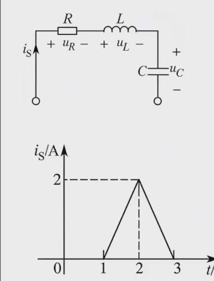
RLC 与电流源串联，电流
i s i_s t = 2 t=2
先把波形写成表达式（t t i i
i ( t ) = { 0 , 0 ≤ t < 1 , 2 ( t − 1 ) , 1 ≤ t < 2 , − 2 ( t − 3 ) , 2 ≤ t < 3 , 0 , t ≥ 3 . i(t)=\begin{cases}0,&0\le t<1,\\2(t-1),&1\le t<2,\\-2(t-3),&2\le t<3,\\0,&t\ge3.\end{cases} 三种元件分别对应三种运算：电阻看电流本身，电感看电流的斜率，电容看电流的累积面积。
第一阶段
1 ≤ t ≤ 2 1\le t\le2
u R = R i = 10 × 2 ( t − 1 ) = ( 20 t − 20 ) V , u_R=Ri=10\times2(t-1)=(20t-20)\ \text{V}, u L = L d i d t = 0.01 × 2 = 0.02 V , u_L=L\frac{di}{dt}=0.01\times2=0.02\ \text{V}, u C = u C ( 1 ) + 1 C ∫ 1 t 2 ( ξ − 1 ) d ξ = 0 + 10 ( t − 1 ) 2 V . u_C=u_C(1)+\frac1C\int_1^t2(\xi-1)\,d\xi=0+10(t-1)^2\ \text{V}. t = 2 t=2 u C ( 2 ) = 10 u_C(2)=10
第二阶段
2 ≤ t ≤ 3 2\le t\le3
u R = 10 × [ − 2 ( t − 3 ) ] = − 20 ( t − 3 ) V , u L = 0.01 × ( − 2 ) = − 0.02 V , u_R=10\times[-2(t-3)]=-20(t-3)\ \text{V},\qquad u_L=0.01\times(-2)=-0.02\ \text{V}, u C = u C ( 2 ) + 1 0.1 ∫ 2 t [ − 2 ( ξ − 3 ) ] d ξ = 10 + 10 ( − t 2 + 6 t − 8 ) = ( − 10 t 2 + 60 t − 70 ) V . u_C=u_C(2)+\frac1{0.1}\int_2^t\left[-2(\xi-3)\right]d\xi=10+10\left(-t^2+6t-8\right)=\left(-10t^2+60t-70\right)\ \text{V}. t ≥ 3 t\ge3 u R = u L = 0 u_R=u_L=0 u C = u C ( 3 ) = 20 u_C=u_C(3)=20
从结果读出的物理意义。
(1) 电阻电压与电流同形，只与当时的电流有关。
(2) 电感电压在上升段为
+ 0.02 +0.02 − 0.02 -0.02 t = 2 t=2
(3)
电容电压在第二阶段仍在上升：电流虽然在减小，但仍然为正，d u C / d t = i / C > 0 du_C/dt=i/C>0 t > 3 t>3
检查。 电容电压在 1、2、3 s 连续，分别为 0、10、20
V；三角形面积（总电荷）为
1 2 × 2 × 2 = 2 \frac12\times2\times2=2 Δ u C = Q / C = 20 \Delta u_C=Q/C=20 1 2 × 0.1 × 20 2 = 20 \frac12\times0.1\times20^2=20 R ∫ i 2 d t = 10 × 8 3 = 80 3 R\int i^2dt=10\times\frac83=\frac{80}3 20 + 80 3 = 140 3 20+\frac{80}{3}=\frac{140}{3}
以后遇到任意分段波形，都按“电阻看原函数、电感看斜率、电容看面积”处理，并把每段终点值作为下一段的初值。
6 独立电源
电阻、电容、电感都是无源元件，本身不产生电能。电路中的能量来自电源。本课程把电源分为两大类：本单元的独立电源 ，其输出由自身决定；下一单元的受控电源 ，其输出受电路中别处的电压或电流控制。
6.1 理想电压源
定义 6 · 理想电压源
为外电路提供确定的电压
u = u s ( t ) u=u_s(t)
“独立”不等于“恒定”：u s ( t ) u_s(t)
理想电压源的伏安特性（U U I I U = U s U=U_s R R I = U s / R I=U_s/R R R
非零的理想电压源不能短路。
短路要求端电压为零，而电压源要求端电压为
U s ≠ 0 U_s\ne0
6.2 实际电压源
实际电源带负载工作时，输出电压略低于空载电压。模型是理想电压源
U s U_s r r
伏安特性是一条斜向下的直线，斜率大小就是内阻
r r I I 电压源的内阻越小越好 ，r → 0 r\to0
接负载电阻
R L R_L
I = U s r + R L , U = R L r + R L U s . I=\frac{U_s}{r+R_L},\qquad U=\frac{R_L}{r+R_L}U_s . 6.3 理想电流源
定义 7 · 理想电流源
为外电路提供确定的电流
i = i s ( t ) i=i_s(t)
符号是圆圈内一条与电流方向垂直的横线（区别于电压源圆圈内的连通线），箭头表示
i s i_s
(a) 理想电流源的符号与参考方向；(b)
伏安特性：实线为理想电流源
I = I s I=I_s β \beta
在
I I U U I = I s I=I_s R R U = R I s U=RI_s R R
非零的理想电流源不能开路。
开路要求电流为零，而电流源要求电流为
I s ≠ 0 I_s\ne0
6.4 实际电流源
模型是理想电流源
I s I_s 并联 内阻
r r
由 KCL（第 9 单元），源电流一部分从内阻分流，其余才流到外部：
I = I s − U r . I=I_s-\frac{U}{r}. U U R L R_L
I = r r + R L I s , I=\frac{r}{r+R_L}I_s , 电流源的内阻越大越好 ，r → ∞ r\to\infty
注意 · 比较电流时先说清是哪一支电流
实际电流源外部开路时，外部电流就是零，I s I_s I s I_s
6.5 实验室直流稳压电源
实验室用的直流电源通常有两种工作模式：恒压模式 （CV）近似电压源，恒流模式 （CC）近似电流源。一台典型电源的指标如下：
指标
数值
额定输出电压 / 可设定电压
0–32 V / 0–33 V
额定输出电流 / 可设定电流
0–6 A / 0–6.3 A
输出功率
192 W
负载调节率
电压 <0.1%+5 mV；电流 <0.2%+3 mA
负载调节率 衡量负载变化时输出的变化量：恒压模式下负载从空载变到满载，输出电压变化不超过设定值的
0.1% 再加 5 mV；恒流模式下输出电流变化不超过 0.2% 加 3
mA。它说明实际电源都不是理想源，设定好的数值会随负载略有变化。例如恒压
12 V 时，电压可能变化
12 × 0.1 % + 0.005 = 0.017 12\times0.1\%+0.005=0.017
直流电源按原理还分线性电源 和开关电源 ：线性电源纹波（输出噪声）小、成本高；开关电源纹波大、成本低、效率高。对噪声敏感的模拟和光电测量电路优先用线性电源，一般数字电路用开关电源即可。
7 受控电源
7.1 四种受控源
定义 8 · 受控源
输出电压或输出电流受电路中其他支路的电压或电流控制的电源，称为受控源 。受控源有两个端口：输入端口是控制量所在的支路，输出端口是受控的电压源或电流源。
控制量可以是电压或电流，被控量也可以是电压或电流，组合出四种类型：
类型
英文缩写
关系
系数名称与量纲
电压控制电流源
VCCS
i 2 = g u 1 i_2=gu_1 g g
电压控制电压源
VCVS
u 2 = μ u 1 u_2=\mu u_1 μ \mu
电流控制电压源
CCVS
u 2 = r i 1 u_2=ri_1 r r
电流控制电流源
CCCS
i 2 = α i 1 i_2=\alpha i_1 α \alpha
缩写按英文逐字母读：第一个字母是控制量（V = Voltage，C =
Current），第二个 C 是 Controlled，第三个字母是被控量，最后的 S 是
Source。例如 VCCS = Voltage-Controlled Current Source。
四种受控源（a）VCCS、（b）VCVS、（c）CCVS、（d）CCCS。受控源用菱形表示；菱形内是横线的为受控电流源，带“+”“−”的为受控电压源。
符号区分。
独立源画圆形，受控源画菱形；电流源内部画一条隔断的横线，电压源标出正负极。输入端口若控制量是电压，就是开路的端钮间电压
u 1 u_1 i 1 i_1
受控源与独立源的本质区别。
独立源是电路的激励，自己决定输出；受控源反映的是电路内部一个变量对另一个变量的作用，本身不能单独作为激励。如果电路中所有独立源都置零，控制量通常也为零，受控源的输出随之为零。
7.2 晶体管是电流控制电流源
受控源不是纯粹的数学构造。三极管（晶体管）工作在放大区时，集电极电流
i c i_c i b i_b i c ≈ β i b i_c\approx\beta i_b u c e u_{ce}
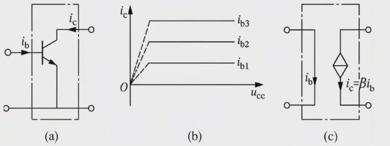
(a) 三极管，基极电流
i b i_b i c i_c i b i_b i c i_c i c = β i b i_c=\beta i_b
特性曲线在
u c e u_{ce}
7.3 例 含 CCCS 的电路
例 3 · 求 CCCS 负载上的电压
图示电路中，独立电压源
U s = 10 U_s=10 R 1 = 100 Ω R_1=100\ \Omega R 2 = 50 Ω R_2=50\ \Omega α I 1 \alpha I_1 α = 0.9 \alpha=0.9 U 2 U_2
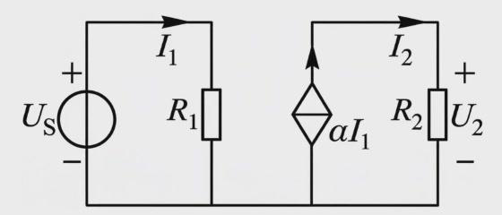
左边：U s U_s R 1 R_1 I 1 I_1 α I 1 \alpha I_1 R 2 R_2 U 2 U_2 R 2 R_2
先求控制量，再求受控量：
I 1 = U s R 1 = 10 100 = 0.1 A , I 2 = α I 1 = 0.09 A , U 2 = R 2 I 2 = 4.5 V . I_1=\frac{U_s}{R_1}=\frac{10}{100}=0.1\ \text{A},\qquad I_2=\alpha I_1=0.09\ \text{A},\qquad U_2=R_2I_2=4.5\ \text{V}. 含受控源的电路总是先把控制量用其他量表示出来。本题控制量在一个独立回路中可以直接求出，更一般的情形要把
I 2 = α I 1 I_2=\alpha I_1
8 电路的拓扑结构
元件约束说明每个元件自身的规律，连接方式带来的约束则只与电路“怎样连”有关，与元件是什么无关。描述连接方式需要下面这些概念。
(a) 电路图：6 条支路、4 个节点；(b)
对应的拓扑图，支路编号 1–6，箭头为支路电流的参考方向。
定义 9 · 支路、节点、回路、网孔
(1)
支路 ：单个或若干个元件串联组成的分支，同一支路中各元件流过的电流相等。
(2) 节点 ：三条或三条以上支路的连接点。
(3) 回路 ：由若干支路组成的闭合路径。
(4) 网孔回路 （网孔）：内部不含其他支路的回路。
对照上图 (a)：
R 2 R_2 R 4 R_4 R 5 R_5 R 3 R_3 R 6 R_6 U s 1 U_{s1} R 1 R_1 一条 支路。共
6 条支路。R 2 R_2 R 3 R_3 节点只有 ①②③④
四个。U s 1 U_{s1} R 1 R_1
R 2 R 5 R 3 R_2R_5R_3 R 5 R 4 R 6 R_5R_4R_6 R 3 R 6 R_3R_6 R 2 R 4 R 6 R 3 R_2R_4R_6R_3 R 5 R_5 R 3 R_3 R 5 R_5 R 4 R_4
拓扑图 ：把每条支路画成线段、节点画成点，去掉具体元件，只保留连接关系。支路标上电流参考方向后称为有向图 。拓扑图说明，连接方式的约束与元件无关，只由这张图决定。
9 基尔霍夫定律
基尔霍夫定律由德国物理学家基尔霍夫于 1845
年提出，包括电流定律（KCL）和电压定律（KVL）。它贯穿整门课程，是所有电路分析方法的基础。
9.1 基尔霍夫电流定律
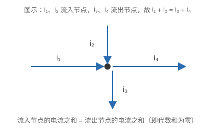
节点处的电流：流入与流出的代数和为零。图为示意。
定理 1 · KCL
在集总参数电路中，任一时刻流出任一节点的所有支路电流之和，等于流入该节点的所有支路电流之和。等价地，流经任一节点的所有支路电流的代数和为零：
物理意义：电荷守恒。集总条件保证节点上电荷的变化率为零，电荷不会在节点处积累，所以电流具有连续性。
KCL
是电荷守恒 的表现，不是能量守恒。列方程前先约定符号，例如流出为正、流入为负（反过来也可以，全题一致即可）。对上面拓扑图的四个节点，按流出为正得
节点 1: − i 1 − i 2 + i 3 = 0 , 节点 2: i 2 + i 4 − i 5 = 0 , \text{节点 1: }-i_1-i_2+i_3=0,\qquad\text{节点 2: }i_2+i_4-i_5=0, 节点 3: − i 4 + i 1 + i 6 = 0 , 节点 4: − i 3 + i 5 − i 6 = 0 . \text{节点 3: }-i_4+i_1+i_6=0,\qquad\text{节点 4: }-i_3+i_5-i_6=0 . KCL 的推广。
电荷守恒对任何闭合面都成立：流出（或流入）任一闭合面的所有支路电流代数和为零。例如用一个闭合面把节点
② 和 ④ 连同它们之间的支路 5 一起包起来，支路 5 的电流在面内进出抵消，得
i 2 + i 4 − i 3 − i 6 = 0 i_2+i_4-i_3-i_6=0
闭合面的形式常常能一步得出结论：如果一部分电路与其余部分只通过一条支路相连，这条支路的电流必为零 （习题
P4 会用到）。
9.2 基尔霍夫电压定律
定理 2 · KVL
在集总参数电路中，任一时刻沿任一回路，所有支路电压的代数和为零：
物理意义：集总电路中电位是单值的。从回路上某点出发绕行一周回到原点，电位不变。
列 KVL 的步骤：
(1) 选定回路的绕行方向（顺时针或逆时针）；
(2) 支路电压参考方向与绕行方向一致的取正，相反的取负；
(3) 再把每个支路电压用元件关系写出来，例如电阻支路
u = R i + U s u=Ri+U_s
不要把电源的正负极与支路电压的参考方向混为一谈。
电源符号旁的“+”“−”是电源本身的极性；支路电压的参考方向是另外标注的，两者可以一致，也可以相反。
KVL 的另外两种写法。
(1)
沿任一回路，各无源元件上的电压降 的代数和等于各电压源电动势 的代数和：∑ R I = ∑ U s \sum RI=\sum U_s R I RI 电动势方向 （在电源内部由“−”指向“+”）与绕行方向一致时
U s U_s
(2) 电路中两点 a、b 之间的电压，等于从 a 到 b
沿任意路径 各段电压降的代数和。与
u a b u_{ab}
9.3 例 两电压源与三个电阻
例 4 · 求中间短接线上的电流
图示电路中，U s 1 = 6 U_{s1}=6 U s 2 = 8 U_{s2}=8 R 1 = 3 Ω R_1=3\ \Omega R 2 = 4 Ω R_2=4\ \Omega R = 14 Ω R=14\ \Omega I 21 I_{21}
上方导线为节点
T，左中节点与中间节点由一段导线相连（电流
I 21 I_{21} U s 1 U_{s1} U s 2 U_{s2}
思路。
I 21 I_{21} I 21 = I 1 − I 2 I_{21}=I_1-I_2 I 1 = − I 11 − I I_1=-I_{11}-I I I I 2 I_2 I 11 I_{11}
(1) 求
I I U s 1 U_{s1} U s 2 U_{s2} R R
R I = U s 1 + U s 2 ⇒ 14 I = 6 + 8 , I = 1 A . RI=U_{s1}+U_{s2}\quad\Rightarrow\quad 14I=6+8,\quad I=1\ \text{A}. (2) 求
I 2 I_2 R 2 R_2 U s 2 U_{s2} I 2 = U s 2 / R 2 = 2 I_2=U_{s2}/R_2=2
(3) 求
I 11 I_{11} R 1 R_1 U s 1 U_{s1} I 11 = U s 1 / R 1 = 2 I_{11}=U_{s1}/R_1=2
于是
I 1 = − I 11 − I = − 3 I_1=-I_{11}-I=-3 I 21 = I 1 − I 2 = − 5 I_{21}=I_1-I_2=-5 I 21 I_{21}
功率平衡检查。 设 B 点电位为零，则中间节点电位 8
V，上方节点 14
V。U s 1 U_{s1} I 1 = − 3 I_1=-3 6 × ( − 3 ) = − 18 6\times(-3)=-18 U s 2 U_{s2} − ( I 2 + I ) = − 3 -(I_2+I)=-3 − 24 -24 6 × 2 + 8 × 2 + 14 × 1 = 42 6\times2+8\times2+14\times1=42 42 − 18 − 24 = 0 42-18-24=0
9.4 例 沿路径求两点间电压
例 5 · 求串接三段电路的端电压
U a d U_{ad}
图示电路由三段串接而成，R 1 = R 2 = R 3 = 10 Ω R_1=R_2=R_3=10\ \Omega U s 1 = U s 2 = U s 3 = 12 U_{s1}=U_{s2}=U_{s3}=12 I s 1 = 1 I_{s1}=1 I s 2 = 2 I_{s2}=2 I s 3 = 3 I_{s3}=3 U a d U_{ad}
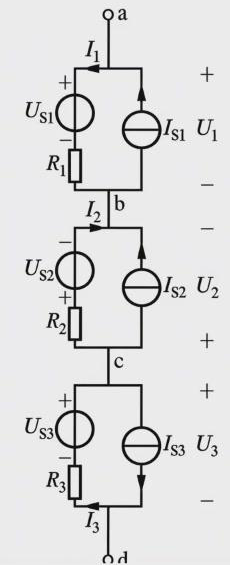
三段电路从上到下串接：a–b 段、b–c 段、c–d
段各由一个电压源串电阻，与一个电流源并联构成。U 1 U_1 U 3 U_3 U 2 U_2
a、d
两端开路，所以段与段之间的连线上没有电流，每一段内部电流源的电流全部流过同段的电压源和电阻支路。
沿 a→b→c→d
取电压降：U a d = U 1 − U 2 + U 3 U_{ad}=U_1-U_2+U_3 U 2 U_2
a–b
段：I s 1 I_{s1} U s 1 U_{s1} R 1 R_1 I 1 = I s 1 I_1=I_{s1} U 1 = U s 1 + I 1 R 1 = 12 + 10 = 22 U_1=U_{s1}+I_1R_1=12+10=22
b–c
段：I s 2 I_{s2} U s 2 U_{s2} R 2 R_2 I 2 I_2 I 2 = − I s 2 I_2=-I_{s2} U 2 = I 2 R 2 + U s 2 = − 20 + 12 = − 8 U_2=I_2R_2+U_{s2}=-20+12=-8
c–d
段：I s 3 I_{s3} R 3 R_3 U s 3 U_{s3} U 3 = U s 3 − I s 3 R 3 = 12 − 30 = − 18 U_3=U_{s3}-I_{s3}R_3=12-30=-18
U a d = 22 − ( − 8 ) + ( − 18 ) = 12 V . U_{ad}=22-(-8)+(-18)=12\ \text{V}. 每一段的电压都是沿左支路写的；沿右边的电流源支路走也可以，但电流源的端电压未知，写不出来。沿路径求电压时，要选电压能写出来的那条路。
9.5 KVL 同样适用于时变电路
例 6 · RLC 串联电路的电流方程
RLC 与电压源
u s ( t ) = cos t u_s(t)=\cos t i i
基尔霍夫定律对任意时刻的瞬时值成立，不限于直流。沿回路顺时针绕行：
u R + u L + u C − u s = 0 . u_R+u_L+u_C-u_s=0 . 代入元件关系
u R = R i u_R=Ri u L = L d i / d t u_L=L\,di/dt u C = u C ( 0 ) + 1 C ∫ 0 t i d ξ u_C=u_C(0)+\frac1C\int_0^t i\,d\xi
R i + L d i d t + u C ( 0 ) + 1 C ∫ 0 t i d ξ = cos t . Ri+L\frac{di}{dt}+u_C(0)+\frac1C\int_0^t i\,d\xi=\cos t . 两边对时间求导，消去积分：
L d 2 i d t 2 + R d i d t + 1 C i = − sin t . L\frac{d^2i}{dt^2}+R\frac{di}{dt}+\frac1C\,i=-\sin t . 这是二阶线性常系数微分方程，解由特解（稳态分量，由激励决定）和齐次通解（暂态分量，由初始状态决定）组成。确定通解中的两个常数需要两个初始条件：i ( 0 ) i(0) u C ( 0 ) u_C(0) d i d t | 0 = u s ( 0 ) − R i ( 0 ) − u C ( 0 ) L \left.\dfrac{di}{dt}\right|_{0}=\dfrac{u_s(0)-Ri(0)-u_C(0)}{L} 只给出方程而不给初始状态，电流是不能唯一确定的 ，这也是元件记忆性的体现。本课程要求掌握一阶动态电路的完整求解，二阶电路先会列方程。
10 独立方程的个数
10.1 两类约束与关键问题
结论 1 · 电路分析的两类约束
(1)
元件约束 ：元件本身的电压电流关系，如欧姆定律、i = C d u / d t i=C\,du/dt
(2)
结构约束 ：由连接方式决定，遵循基尔霍夫定律（KCL、KVL）。
电路分析的基本方法，就是结合这两类约束，建立以支路电压、电流为变量的方程组，解出各支路电压和电流。
一个电路有很多节点和很多回路，每个都能列
KCL、KVL，但它们并不都独立。第 9 单元的四个节点方程相加恒为零；外回路的
KVL
也可以由两个内回路相加得到。多余的方程不提供新信息，漏掉独立方程又解不出来。所以要回答：选哪些节点、哪些回路，列几个方程，才恰好独立而且够用。
答案来自图论。
10.2 平面图与连通图
定义 10 · 平面图、连通图
(1)
平面图 ：能够画在平面上，并且所有支路都可以 没有交叉点的图。
(2)
连通图 ：任意两个节点之间至少有一条由支路构成的路径。
“可以”二字很重要：一张图画出来有交叉，但只要能改画成没有交叉的样子，就是平面图。下图
(a) 左边支路 3 与 6 看上去交叉，把支路 6
移到外面绕过去，交叉就消失了。(b)
无论怎样改画都有交叉，是非平面图。所说的交叉指二维平面上的交叉，在三维空间中让两条线一前一后错开不算消除交叉。
(a)
平面图：左边一张有交叉，改画成中间一张后没有交叉；(b)
非平面图，无论怎样改画都有交叉。
连通与非连通：(a)
中的耦合电感只通过磁场联系，两侧电路没有导线相连，对应的拓扑图 (b)
分成两部分，是非连通图。
10.3 子图、树、树支、连支
定义 11 · 子图与树
(1) 子图 ：图
G 1 G_1 G G G G G 1 G_1 G G
(2) 树 ：连通图
G G G G
(3)
树支 ：组成树的支路。连支 ：不在树上的支路。
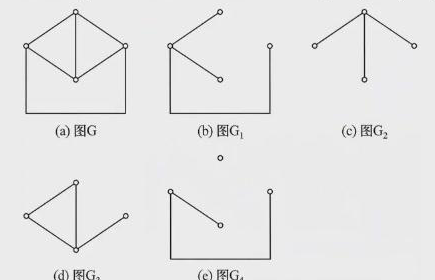
图
G G G 1 G_1 G 4 G_4 G 1 G_1 G 2 G_2 G 3 G_3 G 4 G_4
一个连通图可以有很多棵不同的树，但树支数都相同 ：上图
G 1 G_1 G 2 G_2
定理 3 · 树支数与连支数
连通图有
n n b b n t = n − 1 n_t=n-1 l = b − n + 1 l=b-n+1
为什么是
n − 1 n-1
从一个节点出发，每加一条树支，恰好把一个新节点连进来（若新支路的两端都已在树上，就会形成回路）。连进其余
n − 1 n-1 n − 1 n-1 b − ( n − 1 ) b-(n-1)
连支是相对于选定的树而言的：换一棵树，连支也跟着换。所以要确定连支，先要确定树。
10.4 单连支回路与独立 KVL 方程
定义 12 · 单连支回路（基本回路）
对选定的树，只包含一条 连支、其余都是树支的回路，称为单连支回路，也称基本回路。
每条连支两端都在树上，而树中任意两个节点之间恰有一条路径，所以每条连支和它两端之间的树上路径恰好组成一个回路：单连支回路与连支一一对应，共
b − n + 1 b-n+1
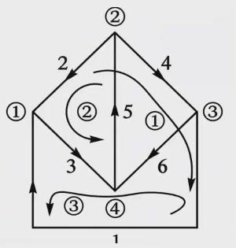
选支路 1、2、3 为树，连支 4、5、6
各确定一个单连支回路：{1,2,4}、{2,3,5}、{1,3,6}。
定理 4 · 独立 KVL 方程数
按单连支回路列写的
b − n + 1 b-n+1 b − n + 1 b-n+1
独立的原因：每个方程都含有一条连支的电压，而这条连支不出现在其他任何单连支回路中。其他方程无论怎样组合，都不能产生这个变量，所以这个方程不能由其他方程推出。
上图
b = 6 b=6 n = 4 n=4 b − n + 1 = 3 b-n+1=3
10.5 网孔
对平面电路 ，还有更直观的选法：网孔。网孔数
m = b − n + 1 m=b-n+1
结论 2 · 怎样选回路列 KVL
(1) 普遍适用：独立 KVL 方程数为
b − n + 1 b-n+1
(2) 平面电路：可以直接按网孔列写
b − n + 1 b-n+1
网孔中有电流源时要小心。 KVL
写的是电压，而电流源两端的电压不由它自身决定，要由外电路决定，是一个额外的未知量。这种网孔需要特别处理，例如增设电流源电压为未知量，或改用把电流源放在连支上的单连支回路。具体方法在后面的网孔分析法中讲。
10.6 独立 KCL 方程与方程总数
KCL 这边的结论是：任选
n − 1 n-1
每条支路连接两个节点，在一个节点方程里算流出（+ + − - n n n − 1 n-1 n − 1 n-1
把两类约束合在一起数：b b b b b b 2 b 2b b b n − 1 n-1 b − n + 1 b-n+1
b + ( n − 1 ) + ( b − n + 1 ) = 2 b , b+(n-1)+(b-n+1)=2b , 方程数正好等于未知量数。以后的支路法、节点法、网孔法，都是在这个计数的基础上减少未知量的不同方式。
10.7 割集与单树支割集
前面说”去掉任意一个节点，其余
n − 1 n-1
定义 13 · 割集
连通图
G G
(1)
移去这些支路的全部，G G
(2) 少移去其中任何一条支路，图仍然保持连通，
就称这组支路为一个割集 。
条件 (2) 说的是”刚好够”：多切一条不是割集，少切一条切不开。下图 (a)
中弧线切过的支路 2、6、9、4 就是一个割集，移去后节点 ①、④ 与 ②、③、⑤
分开。这张图的割集还有很多，例如
{ 5 , 1 , 6 , 2 } , { 2 , 7 , 3 , 10 } , { 4 , 8 , 3 , 10 } , { 5 , 1 , 9 , 4 } , { 2 , 7 , 8 , 4 } , { 5 , 1 , 6 , 7 , 3 , 10 } . \{5,1,6,2\},\ \{2,7,3,10\},\ \{4,8,3,10\},\ \{5,1,9,4\},\ \{2,7,8,4\},\ \{5,1,6,7,3,10\}. 最后一个割集有 6 条支路，移去后图分成 (b) 中的两块：①④ 与支路 5、1
一块，②③⑤ 与支路 7、8、3、10 一块。
(a) 弧线切过支路
2、6、9、4，构成一个割集；(b) 移去割集
{ 5 , 1 , 6 , 7 , 3 , 10 } \{5,1,6,7,3,10\}
割集上的 KCL。
把割集一侧的全部节点圈起来，看成一个广义节点。流出这个广义节点的电流只能经过割集的支路，所以割集中各支路电流的代数和为零 。这就是
KCL 的割集形式，它和对单个节点列 KCL
本质相同：一个节点连出的全部支路，正是把这个节点孤立出来的割集。
定义 14 · 单树支割集（基本割集）
在选定树的连通图中，只含有一条树支 、其余都是连支的割集。
每条树支确定一个单树支割集：移去这条树支，树断成两块；再把跨在两块之间的连支一起移去，图就分成两部分。树支有
n − 1 n-1 n − 1 n-1
选支路 1、2、3 为树：割集 CS1 =
{1,4,6}，CS2 = {2,4,5,6}，CS3 =
{3,5,6}，每个割集只含一条树支。
上图选支路 1、2、3 为树。三个单树支割集是
{ 1 , 4 , 6 } \{1,4,6\} { 2 , 4 , 5 , 6 } \{2,4,5,6\} { 3 , 5 , 6 } \{3,5,6\}
定理 5 · 独立 KCL 方程数
按
n − 1 n-1 n − 1 n-1
理由与单连支回路的论证完全对称：每个单树支割集方程含有一条树支的电流，而这条树支不在其他任何单树支割集中，所以它不能由其他方程组合出来。
结论 3 · 独立方程的完整计数
(1)
KCL：按基本割集列写，或者更常用 地，去掉电路中任意一个节点，对其余
n − 1 n-1 n − 1 n-1
(2) KVL：按单连支回路（平面电路可按网孔）列写，得到
b − n + 1 b-n+1
(3) 两者合计
( n − 1 ) + ( b − n + 1 ) = b (n-1)+(b-n+1)=b b b
第 2 章的作业是教材习题 2.2、2.5、2.9、2.16、2.21，见第 11 单元
P1–P5。第 3
章（非线性电阻元件）放到下学期模拟电路部分再讲，下面直接进入第 4
章。
11 第 2 章练习
P1–P5 是第 2 章的作业题（教材习题 2.2、2.5、2.9、2.16、2.21），P6–P9
是补充题。先独立作答，再展开提示和解析。
P1 判断三个电路中元件的功率属性
练习 · 先独立作答
计算下图各电路中每个元件的功率，并指出是吸收功率还是发出功率。(a)
电压源
U s = 5 U_s=5 I = 1 I=1 I s = 2 I_s=2 U = 5 U=5 U U R R I I R R
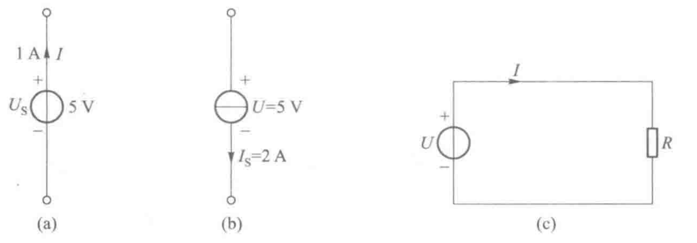
习题 2.2 的三个电路
(a)(b)(c)。
提示 · 先判断关联还是非关联
看电流是从电压“+”端流入还是流出。关联时
U I UI U I UI
解析
(a)
电流从“+”端流出，非关联。P = U s I = 5 × 1 = 5 P=U_sI=5\times1=5 发出 5 W。
(b) 电流 2 A
从“+”端流入，关联。P = U I s = 5 × 2 = 10 P=UI_s=5\times2=10 吸收 10
W。电流源也可以吸收功率，这时它在别的电源带动下充当负载。
(c) 对电压源，电流从“+”端流出，非关联，发出
U I UI 吸收
U I = U 2 / R UI=U^2/R
P2 由已知支路电压求其余支路电压
练习 · 先独立作答
下图中已标出若干支路电压：②①之间 2 V（②端为“−”），②⑤之间 8
V（②端为“−”），③④之间 3 V（③端为“+”），④⑤之间 8
V（④端为“+”）。求待求电压
U 2 U_2 U 3 U_3 U 5 U_5 U 7 U_7
习题 2.5 的电路，节点 ①–⑤。
提示 · 用电位
取 ⑤
为参考点（电位为零），沿已知电压的支路依次求出各节点电位，任何支路电压都是两端电位之差。这等价于沿路径列
KVL。
解析
设
φ 5 = 0 \varphi_5=0
②⑤ 支路 ⑤
端为“+”：φ 5 − φ 2 = 8 \varphi_5-\varphi_2=8 φ 2 = − 8 \varphi_2=-8
②① 支路 ①
端为“+”：φ 1 − φ 2 = 2 \varphi_1-\varphi_2=2 φ 1 = − 6 \varphi_1=-6
④⑤
支路：φ 4 = 8 \varphi_4=8
③④
支路：φ 3 − φ 4 = 3 \varphi_3-\varphi_4=3 φ 3 = 11 \varphi_3=11
于是
U 2 = φ 2 − φ 3 = − 19 V , U 3 = φ 4 − φ 1 = 14 V , U 5 = φ 3 = 11 V , U 7 = φ 1 = − 6 V . U_2=\varphi_2-\varphi_3=-19\ \text{V},\quad U_3=\varphi_4-\varphi_1=14\ \text{V},\quad U_5=\varphi_3=11\ \text{V},\quad U_7=\varphi_1=-6\ \text{V}. 检查 ：沿回路 ③→④→①→②→③ 列 KVL，各段电压降为
φ 3 − φ 4 = 3 \varphi_3-\varphi_4=3 φ 4 − φ 1 = 14 \varphi_4-\varphi_1=14 φ 1 − φ 2 = 2 \varphi_1-\varphi_2=2 φ 2 − φ 3 = − 19 \varphi_2-\varphi_3=-19 3 + 14 + 2 − 19 = 0 3+14+2-19=0
P3 求含电流源电路的电流与电压
练习 · 先独立作答
求下图电路中的
I 1 I_1 I 2 I_2 U a b U_{ab} I 1 I_1 I 2 I_2
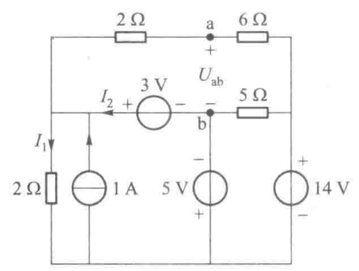
习题 2.9 的电路。
提示 · 先找被电压源“钉死”的电位
取底边为参考点。5 V 电压源直接给出 b 点电位；3 V
电压源接着给出左侧节点电位；14 V
电压源给出右侧节点电位。有了电位，电阻电流都能直接求，最后用 KCL 求
I 2 I_2
解析
设底边电位为零，左侧中间节点为 L，右侧节点为 R。
5 V
源上“−”下“+”：φ b = − 5 \varphi_b=-5
3 V
源左“+”右“−”：φ L = φ b + 3 = − 2 \varphi_L=\varphi_b+3=-2
14 V
源上“+”：φ R = 14 \varphi_R=14
左侧 2
Ω：I 1 = φ L / 2 = − 1 I_1=\varphi_L/2=-1
上方 2 Ω 与 6 Ω 串联于 L、R 之间，从 L 流向 R 的电流
I ′ = ( φ L − φ R ) / 8 = − 2 I'=(\varphi_L-\varphi_R)/8=-2 φ a = φ L − 2 I ′ = 2 \varphi_a=\varphi_L-2I'=2
U a b = φ a − φ b = 7 V . U_{ab}=\varphi_a-\varphi_b=7\ \text{V}. 对节点 L 列 KCL（流入 = 流出）：流入有电流源 1 A 和
I 2 I_2 I 1 I_1 I ′ I'
1 + I 2 = I 1 + I ′ = − 3 , I 2 = − 4 A . 1+I_2=I_1+I'=-3,\qquad I_2=-4\ \text{A}.
P4 求各支路电流与各节点电位
练习 · 先独立作答
求下图各支路电流
I 1 I_1 I 6 I_6
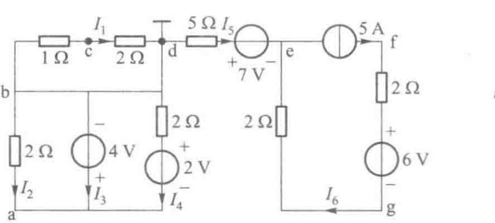
习题 2.16 的电路。
提示 · 两个“零电流”
(1) b、d 被导线短接，1 Ω 与 2 Ω 串联支路两端电压为零。
(2) 用一个闭合面包住 e、f、g 所在的右半部分：它与左半部分只通过
I 5 I_5
解析
左半部分。 b、d 同电位，1 Ω、2 Ω
支路两端电压为零，I 1 = 0 I_1=0 φ c = φ b = φ d = 0 \varphi_c=\varphi_b=\varphi_d=0
4 V
源上“−”下“+”：φ a = φ b + 4 = 4 \varphi_a=\varphi_b+4=4
左侧 2
Ω（I 2 I_2 I 2 = ( φ b − φ a ) / 2 = − 2 I_2=(\varphi_b-\varphi_a)/2=-2
右侧 2 Ω 与 2 V
源支路（I 4 I_4 φ d − 2 I 4 − 2 = φ a \varphi_d-2I_4-2=\varphi_a I 4 = − 3 I_4=-3
节点 a
只连这三条支路，KCL：I 2 + I 3 + I 4 = 0 I_2+I_3+I_4=0 I 3 = 5 I_3=5
右半部分。 闭合面只截到
I 5 I_5 I 5 = 0 I_5=0 I 6 = 5 I_6=5
电位：7 V 源左“+”右“−”，5 Ω
上无电流，φ e = 0 − 7 = − 7 \varphi_e=0-7=-7 φ g = φ e + 2 × 5 = 3 \varphi_g=\varphi_e+2\times5=3 φ f = φ g + 6 + 2 × 5 = 19 \varphi_f=\varphi_g+6+2\times5=19
量
I 1 I_1 I 2 I_2 I 3 I_3 I 4 I_4 I 5 I_5 I 6 I_6
值 / A
0
− 2 -2 5
− 3 -3 0
5
节点
a
b
c
d
e
f
g
电位 / V
4
0
0
0
− 7 -7 19
3
P5 含 VCCS 的放大电路
练习 · 先独立作答
下图是场效应管放大电路的小信号等效电路。已知
Δ U I = 12 \Delta U_I=12 g m = 1.2 g_m=1.2 R 1 = 20 R_1=20 R 2 = 100 R_2=100 R 3 = 10 R_3=10 R 4 = 20 R_4=20 g m Δ U G S g_m\Delta U_{GS} Δ U O \Delta U_O R 3 R_3 R 4 R_4 Δ U O \Delta U_O
习题 2.21 的电路：输入回路
R 1 R_1 R 2 R_2 Δ U G S \Delta U_{GS} R 3 ∥ R 4 R_3\parallel R_4
提示 · 先求控制量
G
端开路，没有电流流入，R 1 R_1 R 2 R_2 Δ U G S \Delta U_{GS} R 3 ∥ R 4 R_3\parallel R_4
解析
Δ U G S = R 2 R 1 + R 2 Δ U I = 100 120 × 12 = 10 V , g m Δ U G S = 1.2 × 10 − 3 × 10 = 12 mA . \Delta U_{GS}=\frac{R_2}{R_1+R_2}\Delta U_I=\frac{100}{120}\times12=10\ \text{V},\qquad g_m\Delta U_{GS}=1.2\times10^{-3}\times10=12\ \text{mA}. 受控电流从上方节点经电流源流到 S，所以流过
R 3 ∥ R 4 R_3\parallel R_4
R 3 ∥ R 4 = 10 × 20 30 = 20 3 k Ω , Δ U O = − 12 mA × 20 3 k Ω = − 80 V . R_3\parallel R_4=\frac{10\times20}{30}=\frac{20}{3}\ \text{k}\Omega,\qquad \Delta U_O=-12\ \text{mA}\times\frac{20}{3}\ \text{k}\Omega=-80\ \text{V}. 负号说明输出与输入反相，放大倍数
Δ U O / Δ U I = − 20 / 3 \Delta U_O/\Delta U_I=-20/3
P6 含 VCVS 的电路与功率平衡
练习 · 先独立作答
输入回路：U s = 6 U_s=6 R 1 = 2 Ω R_1=2\ \Omega R 2 = 4 Ω R_2=4\ \Omega U 1 U_1 R 2 R_2 μ U 1 \mu U_1 μ = 3 \mu=3 R o = 1 Ω R_o=1\ \Omega R L = 5 Ω R_L=5\ \Omega U 1 U_1 U L U_L U s U_s
提示
两个回路没有导线连接，只通过控制关系联系。先在输入回路里求控制量，再解输出回路。
解析
U 1 = U s R 2 R 1 + R 2 = 4 U_1=U_s\dfrac{R_2}{R_1+R_2}=4 μ U 1 = 12 \mu U_1=12 I = 12 1 + 5 = 2 I=\dfrac{12}{1+5}=2 U L = 5 × 2 = 10 U_L=5\times2=10 12 × 2 = 24 12\times2=24 R o R_o U s U_s 6 × 1 = 6 6\times1=6 R 1 R_1 R 2 R_2
负载得到的 20 W 大于输入回路的 6
W，受控源在模型里确实能“提供”功率，这部分能量在实际器件中来自放大器的直流电源。U s = 0 U_s=0 U 1 = 0 U_1=0
P7 实际电流源带不同负载
练习 · 先独立作答
实际电流源
I s = 10 I_s=10 r = 5 r=5 R L = 1 R_L=1 R L = 20 R_L=20 0.95 I s 0.95I_s
提示
I = r r + R L I s I=\dfrac{r}{r+R_L}I_s I = I s − U / r I=I_s-U/r
解析
R L = 1 R_L=1 I = 5 6 × 10 = 8.33 I=\dfrac{5}{6}\times10=8.33 U = 8.33 U=8.33
R L = 20 R_L=20 I = 5 25 × 10 = 2 I=\dfrac{5}{25}\times10=2 U = 40 U=40
负载越大，输出电流越小。要求
r r + R L ≥ 0.95 \dfrac{r}{r+R_L}\ge0.95 R L ≤ r 19 ≈ 263 Ω R_L\le\dfrac{r}{19}\approx263\ \Omega
P8 由电容电压波形求电流与功率
练习 · 先独立作答
C = 2 μ C=2\ \mu 0 ∼ 1 0\sim1 1 ∼ 3 1\sim3 3 ∼ 5 3\sim5 t = 2 t=2 t = 0.5 t=0.5 t = 4 t=4
提示
电流看电压的斜率；毫秒要换成秒。功率
p = u i p=ui
解析
斜率依次为
10 4 10^4 − 5 × 10 3 -5\times10^3
i = 2 × 10 − 6 × 10 4 = 20 mA , 0 , 2 × 10 − 6 × ( − 5 × 10 3 ) = − 10 mA . i=2\times10^{-6}\times10^4=20\ \text{mA},\qquad 0,\qquad 2\times10^{-6}\times(-5\times10^3)=-10\ \text{mA}. t = 2 t=2 W = 1 2 × 2 × 10 − 6 × 10 2 = 100 μ W=\frac12\times2\times10^{-6}\times10^2=100\ \mu
t = 0.5 t=0.5 u = 5 u=5 p = 5 × 0.02 = 0.1 p=5\times0.02=0.1 t = 4 t=4 u = 5 u=5 p = 5 × ( − 0.01 ) = − 0.05 p=5\times(-0.01)=-0.05 1 ∼ 3 1\sim3
P9 选树、数独立方程
练习 · 先独立作答
对第 8 单元的拓扑图（节点 ①–④，支路 1–6；支路 1 连 ①③，2 连 ①②，3 连
①④，4 连 ②③，5 连 ②④，6 连 ③④），选支路 3、5、6 为树。(1)
验证它是树；(2) 写出三个单连支回路；(3) 独立 KCL、KVL 方程各有几个？(4)
这个图的网孔是哪几个？
提示
树要连通、含全部节点、无回路。每条连支加上它两端之间的树上路径就是一个单连支回路。
解析
(1) 支路 3、5、6 都以 ④ 为一端，另一端分别是 ①、②、③：连通、含全部 4
个节点、无回路，是树，树支数
3 = n − 1 3=n-1
(2) 连支 1、2、4：连支 1（①③）的单连支回路 {1, 3, 6}；连支 2（①②）为
{2, 3, 5}；连支 4（②③）为 {4, 5, 6}。
(3)
n = 4 n=4 b = 6 b=6 n − 1 = 3 n-1=3 b − n + 1 = 3 b-n+1=3 2 b 2b
(4) 平面画法下三个网孔为 {2, 3, 5}、{4, 5, 6}、{1, 3,
6}。这组树的单连支回路恰好就是网孔；换一棵树（如第 10 单元的
1、2、3），单连支回路 {1, 2, 4} 就不是网孔，但仍然独立。
C 概念检查
练习 · 先独立作答
判断下列说法是否正确。
电流的参考方向必须与实际方向一致，否则结果不对。
电容电流为零的时刻，电容电压一定为零。
非零的理想电流源可以短路。
电路中所有独立源置零后，受控源的输出一般也为零。
KCL 和 KVL 只适用于直流电路。
平面电路的每一个回路都是网孔。
KCL 反映的是能量守恒。
按单连支回路列写的 KVL 方程一定相互独立。
核对
错。参考方向任意选，结果为负只说明实际方向相反。
错。i = C d u / d t i=C\,du/dt 1 ∼ 3 1\sim3
对。短路时端电压为零，电流为
I s I_s
对。受控源不是激励，控制量为零时输出为零。
错。它们对任意时刻的瞬时值成立，前提是集总条件。
错。网孔是内部不含其他支路的回路，回路不一定是网孔。
错。KCL 是电荷守恒，节点上不积累电荷。
对。每个方程都含一条其他方程没有的连支。
12 等效变换法
第 4
章讲线性电阻电路的分析方法和定理。先讲等效变换：把复杂电路换成简单电路，最后只需要列一个
KCL 或 KVL 方程就能求解。
12.1 一端口与等效
定义 15 · 一端口电路与等效
(1)
一端口电路 ：任何复杂电路，向外引出两个端钮，并且从一个端钮流入的电流等于从另一个端钮流出的电流，这两个端钮就构成一个端口。
(2)
无源一端口 ：内部没有独立电源 ，由
R、L、C、互感 M
或受控源构成。注意：含受控源仍然叫无源。有源一端口 ：内部含有独立电源。
(3)
等效 ：两个一端口，无论内部结构多么不同，只要端口的电压电流关系相同，就相互等效。
一端口电路（上）与无源一端口电阻网络（下）：网络 P
可以用一个电阻 R 等效。
无源一端口电阻网络的端口电压与端口电流之比是一个常数，称为等效电阻 或输入电阻 。三个端钮的电路，常以第
3
个端钮为参考点，两个三端电路在相同的输入电流下输出电压对应相等，就相互等效。
易错 · 等效只对外部成立
等效变换后，外电路的电压、电流、功率都可以在等效电路里算；但被替换掉的那部分内部的量不能在等效电路里算 ，必须回到原电路去求。后面
12.6
的例题会专门看到这一点。等效电路由原电路本身决定，与外电路接什么无关。
12.2 串并联与平衡电桥
简单的无源一端口电阻网络用串并联直接求等效电阻。不能直接串并联的电路里，最常见的是桥型电路。
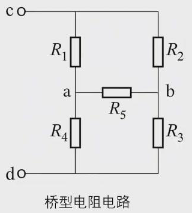
桥型电阻电路：R5 跨接在 a、b
之间。
定理 6 · 电桥平衡条件
当
R 1 R 3 = R 2 R 4 R_1R_3=R_2R_4 自然等电位点 。自然等电位点之间可以开路也可以短路，等效电阻不变：
开路： R c d = ( R 1 + R 4 ) / / ( R 2 + R 3 ) , 短路： R c d = ( R 1 / / R 2 ) + ( R 4 / / R 3 ) . \text{开路：}R_{cd}=(R_1+R_4)\,/\!/\,(R_2+R_3),\qquad \text{短路：}R_{cd}=(R_1/\!/R_2)+(R_4/\!/R_3).
a、b 等电位，R5
中就没有电流，把它拿掉（开路）或换成导线（短路）都不改变任何其他支路的电流。
应用：精密电阻测量（惠斯通电桥）。 在 a、b
间接检流计，调节已知电阻
R 2 R_2 R 3 R_3 R 4 R_4 R 1 = R 2 R 4 / R 3 R_1=R_2R_4/R_3 R 3 R_3 R 4 R_4
12.3 例 设计 T 形衰减器
例题 · T 形衰减器
点画线框内是 T 形衰减器，负载电阻
R = 2 Ω R=2\ \Omega R R R 1 R_1 R 2 R_2
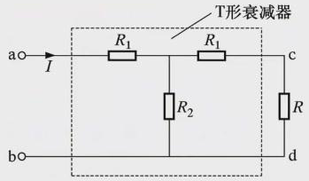
T 形衰减器：两个
R 1 R_1 R 2 R_2 R R
要求 (1) ：从 ab
看进去，R 1 R_1 R 2 R_2 ( R 1 + R ) (R_1+R)
R a b = R 1 + R 2 ( R 1 + 2 ) R 2 + ( R 1 + 2 ) = 2 . R_{ab}=R_1+\frac{R_2(R_1+2)}{R_2+(R_1+2)}=2 . 要求 (2) ：设输入电流为
I I U a b = R a b I = 2 I U_{ab}=R_{ab}I=2I I I R 1 + R R_1+R R 2 R 2 + R 1 + 2 I \dfrac{R_2}{R_2+R_1+2}I
U c d = 2 R 2 R 2 + R 1 + 2 I . U_{cd}=\frac{2R_2}{R_2+R_1+2}\,I . 由
U a b = 5 U c d U_{ab}=5U_{cd} 2 I = 10 R 2 R 2 + R 1 + 2 I 2I=\dfrac{10R_2}{R_2+R_1+2}I R 2 + R 1 + 2 = 5 R 2 R_2+R_1+2=5R_2 R 1 = 4 R 2 − 2 R_1=4R_2-2
R 1 = 4 3 Ω , R 2 = 5 6 Ω . R_1=\frac43\ \Omega,\qquad R_2=\frac56\ \Omega . 检验 ：R 1 + R = 10 3 R_1+R=\frac{10}{3} R 2 / / ( R 1 + R ) = 5 / 6 × 10 / 3 5 / 6 + 10 / 3 = 2 3 R_2/\!/(R_1+R)=\frac{5/6\times10/3}{5/6+10/3}=\frac23 R a b = 4 3 + 2 3 = 2 R_{ab}=\frac43+\frac23=2 5 / 6 25 / 6 = 1 5 \frac{5/6}{25/6}=\frac15 U c d = 1 5 I × 2 U_{cd}=\frac15I\times2 U a b / U c d = 5 U_{ab}/U_{cd}=5
12.4 例 对称网络的等效电阻
例题 4.1.2 · 各电阻均为
R R
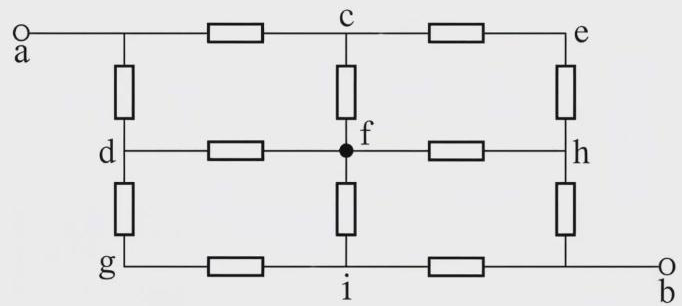
3×3 节点的方格网络，12 个电阻都为
R R
从 a 到 b 是对称电路：沿 a–b 对角线翻转，网络不变。由对称性，c、d
电位相等；e、f、g 电位相等；h、i
电位相等。把自然等电位点短接，网络变成四段串联：
R a b = R 2 + R 4 + R 4 + R 2 = 3 R 2 . R_{ab}=\frac R2+\frac R4+\frac R4+\frac R2=\frac{3R}{2}. 四段依次是：a 到 {c,d} 两个
R R R R R R R R
为什么 f 和 e、g 等电位？ c、d
由对称直接得到等电位。f 不那么显然。可以这样看：沿对角线把节点 f
拆开成两个节点，一个连 c、h 一侧，一个连 d、i 一侧，再把 f 原来接的 4
个电阻按对称分配。拆开后的两个半边电路完全对称，两个”半个
f”电位相等，合回去电流不变。再看 e 和 g：它们分别只和 c、h 或 d、i
相连，处在对称位置上，所以 e、f、g
都处在”中间那条反对角线”上，电位相同。对这种题，不要只套书上的结论，要能说清楚等电位从哪里来。
12.5 Y-Δ 变换
有些电路既不是串并联，电桥也不平衡，这时把三个电阻组成的三角形（Δ）换成星形（Y），或者反过来。
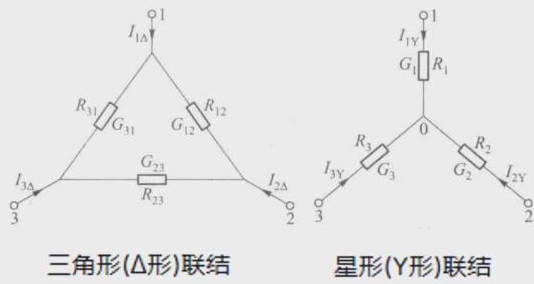
三角形（Δ）联结与星形（Y）联结。
推导。
两种联结对外等效，必须在任何一个端钮悬空时，另外两个端钮之间的电阻都相同。端钮
3 断开时，Δ 中 1、2 之间是
R 12 R_{12} ( R 23 + R 31 ) (R_{23}+R_{31}) R 1 + R 2 R_1+R_2
R 12 ( R 23 + R 31 ) R 12 + R 23 + R 31 = R 1 + R 2 . \frac{R_{12}(R_{23}+R_{31})}{R_{12}+R_{23}+R_{31}}=R_1+R_2 . 端钮 2、端钮 1 断开时同理各得一式。三式相加除以
2，再分别减去每一式，就解出：
结论 4 · Y-Δ 变换公式
Δ→Y： R 1 = R 12 R 31 R 12 + R 23 + R 31 , R 2 = R 23 R 12 R 12 + R 23 + R 31 , R 3 = R 31 R 23 R 12 + R 23 + R 31 ; \text{Δ→Y：}\ R_1=\frac{R_{12}R_{31}}{R_{12}+R_{23}+R_{31}},\quad R_2=\frac{R_{23}R_{12}}{R_{12}+R_{23}+R_{31}},\quad R_3=\frac{R_{31}R_{23}}{R_{12}+R_{23}+R_{31}}; Y→Δ： R 12 = R 1 R 2 + R 2 R 3 + R 3 R 1 R 3 , R 23 = R 1 R 2 + R 2 R 3 + R 3 R 1 R 1 , R 31 = R 1 R 2 + R 2 R 3 + R 3 R 1 R 2 . \text{Y→Δ：}\ R_{12}=\frac{R_1R_2+R_2R_3+R_3R_1}{R_3},\quad R_{23}=\frac{R_1R_2+R_2R_3+R_3R_1}{R_1},\quad R_{31}=\frac{R_1R_2+R_2R_3+R_3R_1}{R_2}. 记法：Δ→Y，星形某端的电阻等于”夹着这个端钮的两个 Δ 电阻之积 / Δ
电阻之和”；Y→Δ，用电导写形式相同。三个电阻相等时，R Y = R Δ / 3 R_Y=R_\Delta/3
例题 · 求
R a b R_{ab}
(a) 原电路，5 Ω、5 Ω、2.5 Ω 组成 Δ；(b)
变换为 2 Ω、1 Ω、1 Ω 的 Y。
Δ→Y ：Δ 三个电阻之和
5 + 5 + 2.5 = 12.5 5+5+2.5=12.5 5 × 5 12.5 = 2 Ω \frac{5\times5}{12.5}=2\ \Omega 5 × 2.5 12.5 = 1 Ω \frac{5\times2.5}{12.5}=1\ \Omega
电桥平衡 ：在 (b) 中，从 3 Ω 右端到 b 有两条路：一条经 Y
的中心，是 2 Ω 再 1 Ω；另一条经右侧竖线，是上方 2 Ω 再下方 1 Ω。Y
中心与右侧竖线之间是 1 Ω、1 Ω
串联的支路，跨在两路之间。2 × 1 = 2 × 1 2\times1=2\times1
R a b = 3 + ( 2 + 1 ) / / ( 2 + 1 ) = ( 3 + 1.5 ) Ω = 4.5 Ω . R_{ab}=3+(2+1)/\!/(2+1)=(3+1.5)\ \Omega=4.5\ \Omega .
12.6 电源的等效变换
理想电源的串并联。
理想电压源串联、理想电流源并联、电压源与其他电路并联、电流源与其他支路串联的等效。
结论 5 · 理想电源的串并联
(1)
理想电压源串联：u s = ∑ u s k u_s=\sum u_{sk} u s u_s i s = ∑ i s k i_s=\sum i_{sk}
(2)
理想电压源与任何电路并联 ，对外等效为这个电压源；理想电流源与任何支路串联 ，对外等效为这个电流源。
(3)
只有大小相等、极性相同的电压源才能并联；只有大小相等、方向相同的电流源才能串联。否则违背
KVL、KCL。
(2)
的道理：电压源并联时端电压被它钉死，并联上什么都改变不了端口的电压，所以对外只看得到它；电流源串联同理。谁被钉死，就等效为谁。
被并联掉的电阻里仍然有电流、仍然消耗功率，只是外电路看不到，这又是”等效对内不成立”。
实际电源之间的等效变换。
实际电压源是理想电压源串电阻，实际电流源是理想电流源并电阻。
实际电流源（左）与实际电压源（右）。
两者的端口特性分别是
U e = U s − R e I e U_e=U_s-R_eI_e U i = ( I s − I i ) R i = R i I s − R i I i U_i=(I_s-I_i)R_i=R_iI_s-R_iI_i I I U U
定理 7 · 电源等效变换
R e = R i , U s = R i I s ( 或 I s = U s R e ) . R_e=R_i,\qquad U_s=R_iI_s\quad\Big(\text{或 }I_s=\frac{U_s}{R_e}\Big). (1)
方向：理想电流源的电流方向与理想电压源电压方向（“−”指向”+“）对应，电流源箭头指向电压源的”+“端。
(2)
理想电压源（R e = 0 R_e=0 R i = ∞ R_i=\infty 不能 相互转换。
(3)
变换对受控源同样适用，但变换过程中受控源的控制变量不能消失 。
例题 · 用电源变换求
I 3 I_3
已知
R 1 = 10 Ω R_1=10\ \Omega R 3 = 20 Ω R_3=20\ \Omega U S 1 = 10 V U_{S1}=10\ \text{V} U S 3 = 80 V U_{S3}=80\ \text{V} I S 2 = 3 A I_{S2}=3\ \text{A} I 3 I_3
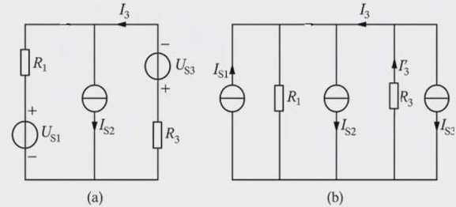
(a) 原电路：左支路
R 1 R_1 U S 1 U_{S1} I S 2 I_{S2} U S 3 U_{S3} R 3 R_3
变换 ：I S 1 = U S 1 R 1 = 1 A I_{S1}=\dfrac{U_{S1}}{R_1}=1\ \text{A} I S 3 = U S 3 R 3 = 4 A I_{S3}=\dfrac{U_{S3}}{R_3}=4\ \text{A}
分流 ：三个电流源合成为
I S 2 + I S 3 − I S 1 = 6 A I_{S2}+I_{S3}-I_{S1}=6\ \text{A} R 3 R_3
I 3 ′ = R 1 R 1 + R 3 ( I S 2 + I S 3 − I S 1 ) = 10 30 × 6 = 2 A . I_3'=\frac{R_1}{R_1+R_3}\,(I_{S2}+I_{S3}-I_{S1})=\frac{10}{30}\times6=2\ \text{A}. 回到原电路 ：I 3 I_3 R 3 R_3 I S 3 I_{S3}
I 3 = I 3 ′ − I S 3 = 2 − 4 = − 2 A . I_3=I_3'-I_{S3}=2-4=-2\ \text{A}. 负号表示
I 3 I_3
例题 · 含受控电压源的变换
已知
I s = 1.5 A I_s=1.5\ \text{A} R 1 = R 2 = 8 Ω R_1=R_2=8\ \Omega r = 4 Ω r=4\ \Omega I 1 I_1 I 2 I_2
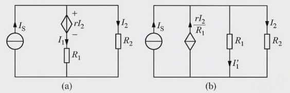
(a) 电流控制的电压源
r I 2 rI_2 R 1 R_1 r I 2 / R 1 rI_2/R_1 R 1 R_1
先认清受控源：菱形内有正负号，是电压源；它的值是
r I 2 rI_2 R 2 R_2 I 2 I_2 电流控制的电压源 （CCVS）。它和
R 1 R_1 r I 2 R 1 \dfrac{rI_2}{R_1} R 1 R_1 I 2 I_2 R 2 R_2
KCL ：(b) 中四条支路并联，端电压是
R 2 I 2 R_2I_2 R 1 R_1 R 2 I 2 R 1 \dfrac{R_2I_2}{R_1}
I s + r I 2 R 1 = R 2 I 2 R 1 + I 2 , 1.5 + 0.5 I 2 = 2 I 2 , I 2 = 1 A . I_s+\frac{rI_2}{R_1}=\frac{R_2I_2}{R_1}+I_2,\qquad 1.5+0.5I_2=2I_2,\qquad I_2=1\ \text{A}. 求
I 1 I_1 ：(b) 中流过
R 1 R_1 I 1 ′ I_1' I 1 I_1
I 1 = I s − I 2 = 0.5 A . I_1=I_s-I_2=0.5\ \text{A}. 若把 (b) 中的
I 1 ′ = R 2 I 2 / R 1 = 1 A I_1'=R_2I_2/R_1=1\ \text{A} I 1 I_1 R 1 R_1
例题 · 受控源使总电阻变为零
已知
U S = 3 V U_S=3\ \text{V} R 1 = 10 Ω R_1=10\ \Omega R 2 = 20 Ω R_2=20\ \Omega β = 2 \beta=2 I I β \beta I I
(a) CCCS
β I \beta I R 1 R_1 β R 1 I \beta R_1I R 1 R_1
菱形中间是隔断的箭头，是电流源；受
I I β \beta
变换 ：β I \beta I R 1 R_1 β R 1 I \beta R_1I R 1 R_1
( R 1 + R 2 ) I = U S + β R 1 I , I = U S R 1 + R 2 − β R 1 = 3 30 − 10 β . (R_1+R_2)I=U_S+\beta R_1I,\qquad I=\frac{U_S}{R_1+R_2-\beta R_1}=\frac{3}{30-10\beta}.
β \beta 2
2.9
2.99
3
I I 0.3
3
30
→ ∞ \to\infty
为什么
β = 3 \beta=3
数学上，30 I = 3 + 30 I 30I=3+30I I → ∞ I\to\infty 负电阻
− β R 1 -\beta R_1 β = 3 \beta=3 − 30 Ω -30\ \Omega R 1 + R 2 = 30 Ω R_1+R_2=30\ \Omega
12.7 输入电阻与输出电阻
定义 16 · 输入电阻与输出电阻
(1)
一端口的输入电阻（等效电阻） ：内部不含独立电源时，端口电压与端口电流之比（关联参考方向）。有源一端口要先把独立源置零：独立电压源短路，独立电流源开路 。受控源保留。
(2) 双口网络的输入电阻 ：从输入口看进去的等效电阻
R i = U i / I i R_i=U_i/I_i
(3)
双口网络的输出电阻 ：独立源置零后，从输出口去掉负载 看进去的等效电阻
R o = U o / I o R_o=U_o/I_o
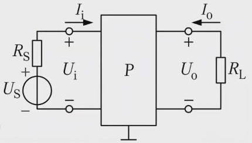
双口网络：左边接信号源
U S U_S R S R_S R L R_L
“看进去”的意思：在这个端口加电压，得到电流，电压电流之比就是看进去的电阻。求法有电阻串并联、Y-Δ
变换，以及加压（加流）法 ：在端口外加电压源（或电流源），用
KCL、KVL
和元件关系求出端口电压与电流之比。含受控源时只能用加压加流法。用万用表测电阻，原理也是加压测流。
求输出电阻为什么必须把独立源置零？从输入口看进去，网络是无源一端口，对信号源是负载；从输出口看，负载左边的电路相当于一个有内阻的电源，输出电阻就是这个内阻，只有把电源本身去掉才能看到它。教材上还给出一种”两次测量”的方法：空载测输出电压
U o ′ U_o' R L R_L U o U_o U o = R L R o + R L U o ′ U_o=\frac{R_L}{R_o+R_L}U_o' R o R_o
放大电路的三个指标。
(1)
输入电阻 衡量放大器对信号源的影响。电压放大电路的输入电阻越大，从信号源取的电流越小，信号源内阻上的压降越小，得到的输入电压越接近信号源的理想电压。示波器输入电阻做到
1 MΩ，就是为了面对各种输出电阻的被测电路都能取到真实电压。
(2)
输出电阻 衡量带负载能力。输出电阻远小于负载电阻时，负载变化时输出电压基本不变；输出电阻较大时，可维持输出电流基本不变。所以电压输出的放大器（像电压源）希望输出电阻越小越好；电流输出的（像电流源）希望越大越好。对电压输出，负载电阻越大，输出功率
U o 2 / R L U_o^2/R_L
(3) 电压放大倍数
A u = u o / u i A_u=u_o/u_i
例题 4.1.7 · 射极输出器的
A u A_u r i r_i r o r_o
下图左为射极输出器的微变等效电路，各电阻和
β \beta
左：射极输出器微变等效电路（图
4.1.16）；右：求输出电阻的等效电路（图
4.1.17），u s u_s u o ′ u_o'
(1) 电压放大倍数 。受控电流源
β i b \beta i_b i b i_b R e R_e R L R_L
u o = ( 1 + β ) i b ( R e / / R L ) , u i = i b r b e + u o = i b [ r b e + ( 1 + β ) ( R e / / R L ) ] , u_o=(1+\beta)i_b\,(R_e/\!/R_L),\qquad u_i=i_br_{be}+u_o=i_b\big[r_{be}+(1+\beta)(R_e/\!/R_L)\big], A u = u o u i = ( 1 + β ) ( R e / / R L ) r b e + ( 1 + β ) ( R e / / R L ) . A_u=\frac{u_o}{u_i}=\frac{(1+\beta)(R_e/\!/R_L)}{r_{be}+(1+\beta)(R_e/\!/R_L)} . A u A_u
(2) 输入电阻 。输入电流是
R b R_b i i i_i 不是
i b i_b
r i = u i i i = u i u i R b + i b = u i u i R b + u i r b e + ( 1 + β ) ( R e / / R L ) = R b / / [ r b e + ( 1 + β ) ( R e / / R L ) ] . r_i=\frac{u_i}{i_i}=\frac{u_i}{\dfrac{u_i}{R_b}+i_b}=\frac{u_i}{\dfrac{u_i}{R_b}+\dfrac{u_i}{r_{be}+(1+\beta)(R_e/\!/R_L)}}=R_b\,/\!/\,\big[r_{be}+(1+\beta)(R_e/\!/R_L)\big]. (3)
输出电阻 。u s u_s R L R_L u o ′ u_o' i o ′ i_o' u o ′ → r b e → ( R b / / R S ) u_o'\to r_{be}\to(R_b/\!/R_S)
u o ′ = − r b e i b − ( R b / / R S ) i b , i b = − u o ′ r b e + R b / / R S . u_o'=-r_{be}i_b-(R_b/\!/R_S)\,i_b,\qquad i_b=\frac{-u_o'}{r_{be}+R_b/\!/R_S}. 对发射极节点列 KCL：
i o ′ = u o ′ R e − ( 1 + β ) i b = u o ′ R e + ( 1 + β ) u o ′ r b e + R b / / R S , i_o'=\frac{u_o'}{R_e}-(1+\beta)i_b=\frac{u_o'}{R_e}+(1+\beta)\frac{u_o'}{r_{be}+R_b/\!/R_S}, r o = u o ′ i o ′ = R e / / r b e + R b / / R S 1 + β . r_o=\frac{u_o'}{i_o'}=R_e\,/\!/\,\frac{r_{be}+R_b/\!/R_S}{1+\beta}. r o r_o
13 支路电流法与回路电流法
等效变换的目的是让电路变简单；电路分析法的目的是让分析过程系统化。两者可以配合：先等效化简，再用分析法。
既然已经知道独立 KCL 有
n − 1 n-1 b − n + 1 b-n+1
方法
列写哪些方程
未知量
方程数
支路电流法
全部独立 KCL 和 KVL
支路电流
b b
回路电流法
仅 KVL
回路电流
b − n + 1 b-n+1
节点电压法
仅 KCL
节点电压
n − 1 n-1
支路电流法的方程并不少，它的意义在于把第 10
单元零散的”这个节点、那个回路”变成一套标准步骤，特别是明确了含理想电流源时怎么处理。
13.1 支路电流法
定义 17 · 支路电流法
以支路电流为变量，对
n − 1 n-1 b − n + 1 b-n+1
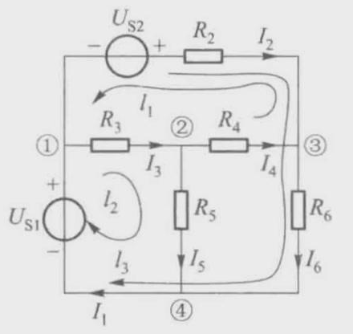
图 4.2.1：4 个节点、6 条支路；选支路
1、2、3
为树，l 1 l_1 l 2 l_2 l 3 l_3
例题 · 写出图 4.2.1 的支路电流方程
KCL ：4 个节点任去一个，比如去掉节点 ④：
① : − I 1 + I 2 + I 3 = 0 , ② : − I 3 + I 4 + I 5 = 0 , ③ : − I 2 − I 4 + I 6 = 0 . \text{①}:\ -I_1+I_2+I_3=0,\qquad \text{②}:\ -I_3+I_4+I_5=0,\qquad \text{③}:\ -I_2-I_4+I_6=0 . KVL ：选支路 1、2、3 为树支，连支 4、5、6
各确定一个单连支回路：
l 1 : R 3 I 3 + R 4 I 4 − R 2 I 2 = − U S 2 , l 2 : R 3 I 3 + R 5 I 5 = U S 1 , l 3 : R 2 I 2 + R 6 I 6 = U S 1 + U S 2 . l_1:\ R_3I_3+R_4I_4-R_2I_2=-U_{S2},\qquad l_2:\ R_3I_3+R_5I_5=U_{S1},\qquad l_3:\ R_2I_2+R_6I_6=U_{S1}+U_{S2}. 6 个方程、6 个未知量。这是平面电路，也可以按网孔列 KVL，更简单。
网孔在不含电流源时很方便；一旦有电流源就要小心，因为电流源两端的电压事先不知道，要由外电路决定，写进
KVL 会多出一个未知数。所以：
结论 6 · 含理想电流源的支路电流法
(1) 选树时不把电流源支路选进树 ，让它成为连支。
(2) 以电流源为连支的单连支回路不列
KVL ，代之以”该支路电流等于电流源电流”。
(3) 节点方程照常列
n − 1 n-1
这样安排，电流源只出现在一个单连支回路里，不会在两个回路之间共享。
例题 · 图 4.2.2 含电流源
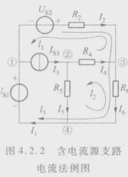
图 4.2.2：支路 3 换成理想电流源
I S 3 I_{S3}
选支路 2、4、6 为树支，电流源支路 3 为连支。节点方程与图 4.2.1
相同。回路方程：
l 1 : I 3 = I S 3 , l 2 : − R 4 I 4 + R 5 I 5 − R 6 I 6 = 0 , l 3 : R 2 I 2 + R 6 I 6 = U S 1 + U S 2 . l_1:\ I_3=I_{S3},\qquad l_2:\ -R_4I_4+R_5I_5-R_6I_6=0,\qquad l_3:\ R_2I_2+R_6I_6=U_{S1}+U_{S2}. l 1 l_1
含受控源 ：把受控源当作独立源列方程；再对它的控制量 列一个附加方程，用支路电流表示控制量。
例题 · 图 4.2.3 含受控电流源
图 4.2.3：支路 3 是电压控制的电流源
g U 6 gU_6 R 6 R_6 U 6 U_6
菱形中间是隔断的箭头，是电流源，受
R 6 R_6 U 6 U_6
l 1 : I 3 = g U 6 , l 2 : − R 4 I 4 + R 5 I 5 − R 6 I 6 = 0 , l 3 : R 2 I 2 + R 6 I 6 = U S 1 + U S 2 , l_1:\ I_3=gU_6,\qquad l_2:\ -R_4I_4+R_5I_5-R_6I_6=0,\qquad l_3:\ R_2I_2+R_6I_6=U_{S1}+U_{S2}, 附加方程
U 6 = R 6 I 6 U_6=R_6I_6
13.2 回路电流法与网孔电流法
回路电流法以独立回路电流 为变量，只对
b − n + 1 b-n+1 不列
KCL ，少了一整组方程。回路电流是假想沿回路流动的环流，要和每条支路的实际电流（支路电流）区分开。
独立回路有两种选法。不含理想电流源时，两种选法除了回路不同，整个过程没有区别：
结论 7 · 网孔还是基本回路
(1)
网孔 ：用于平面电路，并且不含电流源，或者电流源支路处在电路外围 （是外边界的一部分，只属于一个网孔）。方便直观，优先选取。
(2)
基本回路（单连支回路） ：电路含独立或受控电流源，并且电流源在中间支路 上（被两个网孔共有）。这时把电流源选为连支。
电流源在中间支路上也硬用网孔法，不是不行，但要多设电流源电压为未知量、多列方程，非常复杂。单连支回路是普遍适用的，网孔是有前提的直观方法。
网孔电流法的推导。
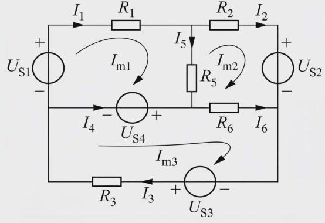
三个网孔的电路，网孔电流
I m 1 I_{m1} I m 2 I_{m2} I m 3 I_{m3}
支路电流与网孔电流的关系：边界支路的电流就是所在网孔的网孔电流；两个网孔共有的支路，电流是两个网孔电流之差：
I 1 = I m 1 , I 2 = I m 2 , I 3 = I m 3 , I 5 = I m 1 − I m 2 , I 4 = I m 3 − I m 1 , I 6 = I m 3 − I m 2 . I_1=I_{m1},\quad I_2=I_{m2},\quad I_3=I_{m3},\quad I_5=I_{m1}-I_{m2},\quad I_4=I_{m3}-I_{m1},\quad I_6=I_{m3}-I_{m2}. 各网孔的 KVL 用支路电流写：
m 1 : R 1 I 1 + R 5 I 5 − U S 1 + U S 4 = 0 , m 2 : R 2 I 2 − R 6 I 6 − R 5 I 5 + U S 2 = 0 , m 3 : R 6 I 6 + R 3 I 3 − U S 4 − U S 3 = 0 . m_1:\ R_1I_1+R_5I_5-U_{S1}+U_{S4}=0,\quad m_2:\ R_2I_2-R_6I_6-R_5I_5+U_{S2}=0,\quad m_3:\ R_6I_6+R_3I_3-U_{S4}-U_{S3}=0 . 代入上面的关系，电压源移到右边：
{ ( R 1 + R 5 ) I m 1 − R 5 I m 2 = U S 1 − U S 4 − R 5 I m 1 + ( R 2 + R 6 + R 5 ) I m 2 − R 6 I m 3 = − U S 2 − R 6 I m 2 + ( R 6 + R 3 ) I m 3 = U S 4 + U S 3 \begin{cases}(R_1+R_5)I_{m1}-R_5I_{m2}=U_{S1}-U_{S4}\\ -R_5I_{m1}+(R_2+R_6+R_5)I_{m2}-R_6I_{m3}=-U_{S2}\\ -R_6I_{m2}+(R_6+R_3)I_{m3}=U_{S4}+U_{S3}\end{cases} 支路电流与网孔电流的关系式实际上替代了
KCL ：网孔电流自动满足每个节点的 KCL，所以不必再列。
定理 8 · 网孔电流方程的一般式
[ R 11 R 12 ⋯ R 1 m R 21 R 22 ⋯ R 2 m ⋮ ⋱ ⋮ R m 1 R m 2 ⋯ R m m ] [ I m 1 I m 2 ⋮ I m m ] = [ ∑ m 1 U S ∑ m 2 U S ⋮ ∑ m m U S ] , 𝐑 𝐈 m = 𝐔 s . \begin{bmatrix}R_{11}&R_{12}&\cdots&R_{1m}\\R_{21}&R_{22}&\cdots&R_{2m}\\\vdots&&\ddots&\vdots\\R_{m1}&R_{m2}&\cdots&R_{mm}\end{bmatrix}\begin{bmatrix}I_{m1}\\I_{m2}\\\vdots\\I_{mm}\end{bmatrix}=\begin{bmatrix}\sum_{m_1}U_S\\\sum_{m_2}U_S\\\vdots\\\sum_{m_m}U_S\end{bmatrix},\qquad \mathbf R\mathbf I_m=\mathbf U_s . (1) 自电阻
R k k R_{kk} k k
(2) 互电阻
R j k R_{jk} j j k k
(3) 右边
∑ U S \sum U_S
例如上图网孔
1：R 11 = R 1 + R 5 R_{11}=R_1+R_5 R 12 = − R 5 R_{12}=-R_5 I m 1 I_{m1} R 5 R_5 I m 2 I_{m2} U S 1 U_{S1} I m 1 I_{m1} U S 4 U_{S4} 最后一步不要忘 ：还原成支路电流。
例题 · 网孔电流法求各支路电流
U S 1 = 100 V U_{S1}=100\ \text{V} U S 2 = 140 V U_{S2}=140\ \text{V} R 1 = 15 Ω R_1=15\ \Omega R 2 = 5 Ω R_2=5\ \Omega R 3 = 10 Ω R_3=10\ \Omega R 4 = 4 Ω R_4=4\ \Omega R 5 = 50 Ω R_5=50\ \Omega
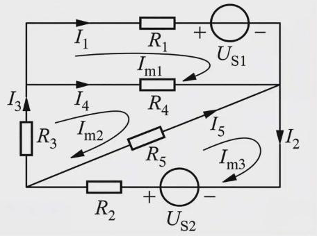
三个网孔：上方
R 1 R_1 U S 1 U_{S1} R 4 R_4 R 3 R_3 R 4 R_4 R 5 R_5 R 5 R_5 R 2 R_2 U S 2 U_{S2}
电路中没有电流源，直接用网孔法。按自电阻、互电阻套一般式：
{ ( R 1 + R 4 ) I m 1 − R 4 I m 2 = − U S 1 − R 4 I m 1 + ( R 3 + R 4 + R 5 ) I m 2 − R 5 I m 3 = 0 − R 5 I m 2 + ( R 2 + R 5 ) I m 3 = U S 2 ⇒ { 19 I m 1 − 4 I m 2 = − 100 − 4 I m 1 + 64 I m 2 − 50 I m 3 = 0 − 50 I m 2 + 55 I m 3 = 140 \begin{cases}(R_1+R_4)I_{m1}-R_4I_{m2}=-U_{S1}\\-R_4I_{m1}+(R_3+R_4+R_5)I_{m2}-R_5I_{m3}=0\\-R_5I_{m2}+(R_2+R_5)I_{m3}=U_{S2}\end{cases}\Longrightarrow\begin{cases}19I_{m1}-4I_{m2}=-100\\-4I_{m1}+64I_{m2}-50I_{m3}=0\\-50I_{m2}+55I_{m3}=140\end{cases} 解得
I m 1 = − 4 A I_{m1}=-4\ \text{A} I m 2 = 6 A I_{m2}=6\ \text{A} I m 3 = 8 A I_{m3}=8\ \text{A}
I 1 = I m 1 = − 4 A , I 2 = I m 3 = 8 A , I 3 = I m 2 = 6 A , I 4 = I m 2 − I m 1 = 10 A , I 5 = I m 3 − I m 2 = 2 A . I_1=I_{m1}=-4\ \text{A},\quad I_2=I_{m3}=8\ \text{A},\quad I_3=I_{m2}=6\ \text{A},\quad I_4=I_{m2}-I_{m1}=10\ \text{A},\quad I_5=I_{m3}-I_{m2}=2\ \text{A}. 边界支路的电流就是网孔电流，只有公共支路要做减法。
电流源在外围、含受控源时。
外围支路含电流源，通过该支路的网孔电流就等于电流源电流，这个网孔不列
KVL。含受控源，先当独立源列方程，再用网孔电流 表示控制量（支路电流法用支路电流表示，节点法用节点电压表示，规则一致）。
例题 · 外围电流源与受控电压源
U S 1 = 11 V U_{S1}=11\ \text{V} U S 3 = 6 V U_{S3}=6\ \text{V} R 1 = 3 Ω R_1=3\ \Omega R 2 = 2 Ω R_2=2\ \Omega R 3 = 3 Ω R_3=3\ \Omega R 4 = 2 Ω R_4=2\ \Omega α = − 1 \alpha=-1 I S = 6 A I_S=6\ \text{A} I 2 I_2
三个网孔都取顺时针；右边外围支路是电流源
I S I_S α I 2 \alpha I_2
电流源
I S I_S α I 2 \alpha I_2
m 1 : ( R 1 + R 2 ) I m 1 − R 2 I m 2 = U S 1 m 2 : − R 2 I m 1 + ( R 2 + R 3 + R 4 ) I m 2 − R 3 I m 3 = U S 3 − α I 2 m 3 : I m 3 = I S 附加 : I 2 = I m 1 − I m 2 \begin{aligned}m_1:&\ (R_1+R_2)I_{m1}-R_2I_{m2}=U_{S1}\\ m_2:&\ -R_2I_{m1}+(R_2+R_3+R_4)I_{m2}-R_3I_{m3}=U_{S3}-\alpha I_2\\ m_3:&\ I_{m3}=I_S\\ \text{附加}:&\ I_2=I_{m1}-I_{m2}\end{aligned} m 2 m_2 U S 3 U_{S3} α I 2 \alpha I_2 I m 3 = 6 I_{m3}=6 − α I 2 = I m 1 − I m 2 -\alpha I_2=I_{m1}-I_{m2}
{ 5 I m 1 − 2 I m 2 = 11 − 3 I m 1 + 8 I m 2 = 24 ⇒ I m 1 = 4 A , I m 2 = 4.5 A , \begin{cases}5I_{m1}-2I_{m2}=11\\-3I_{m1}+8I_{m2}=24\end{cases}\Longrightarrow I_{m1}=4\ \text{A},\quad I_{m2}=4.5\ \text{A}, I 2 = I m 1 − I m 2 = − 0.5 A . I_2=I_{m1}-I_{m2}=-0.5\ \text{A}. 检验 ：m 2 m_2 − 2 × 4 + 7 × 4.5 − 3 × 6 = 5.5 -2\times4+7\times4.5-3\times6=5.5 6 − ( − 1 ) ( − 0.5 ) = 5.5 6-(-1)(-0.5)=5.5
13.3 基本回路电流法
电流源在中间支路上时，改用基本回路（单连支回路）：
选树 ，确定独立回路。电流源（独立的和受控的）所在支路尽量选为连支。选回路绕行方向 ，一般取连支电流的方向。对独立回路按一般式列
KVL，规则与网孔电流法相同（自电阻、互电阻、右边电压源代数和）。含电流源的回路，回路电流直接等于电流源电流（或差一个负号）。
求解，并还原支路电流。
各基本回路中的环流就是对应的单连支电流 ：连支只属于它自己确定的那个基本回路，不被其他基本回路共用，所以这个回路的环流在数值上就等于连支的实际电流。
例题 · 两个电流源都在中间支路
R 1 = 1 Ω R_1=1\ \Omega R 2 = 2 Ω R_2=2\ \Omega R 3 = 3 Ω R_3=3\ \Omega R 5 = 4 Ω R_5=4\ \Omega R 6 = 6 Ω R_6=6\ \Omega I S 3 = 5 A I_{S3}=5\ \text{A} I S 4 = 6 A I_{S4}=6\ \text{A} U S 6 = 50 V U_{S6}=50\ \text{V}
电流源
I S 3 I_{S3} I S 4 I_{S4} R 2 R_2 R 5 R_5 R 6 R_6 U S 6 U_{S6}
两个电流源都不在边界上，用基本回路。选
R 2 R_2 R 5 R_5 R 6 R_6 U S 6 U_{S6} R 1 R_1 I S 3 I_{S3} I S 4 I_{S4}
l 1 : I l 1 = I S 3 = 5 A , l 2 : I l 2 = I S 4 = 6 A , l_1:\ I_{l1}=I_{S3}=5\ \text{A},\qquad l_2:\ I_{l2}=I_{S4}=6\ \text{A}, l 3 : ( R 1 + R 2 + R 6 ) I l 3 + R 2 I l 1 + R 6 I l 2 = − U S 6 . l_3:\ (R_1+R_2+R_6)I_{l3}+R_2I_{l1}+R_6I_{l2}=-U_{S6}. l 3 l_3 R 1 + R 2 + R 6 R_1+R_2+R_6 l 1 l_1 R 2 R_2 l 2 l_2 R 6 R_6 l 3 l_3 U S 6 U_{S6} 9 I l 3 = − 50 − 10 − 36 9I_{l3}=-50-10-36
I l 3 = − 32 3 A . I_{l3}=-\frac{32}{3}\ \text{A}. 还原支路电流 （方向按图中箭头，I 6 I_6 R 6 R_6
I 1 = I l 3 = − 32 3 A , I 3 = − I l 1 = − 5 A , I 4 = I l 2 = 6 A , I_1=I_{l3}=-\frac{32}{3}\ \text{A},\quad I_3=-I_{l1}=-5\ \text{A},\quad I_4=I_{l2}=6\ \text{A}, I 2 = − ( I l 1 + I l 3 ) = 17 3 A , I 5 = I l 2 − I l 1 = 1 A , I 6 = − ( I l 2 + I l 3 ) = 14 3 A . I_2=-(I_{l1}+I_{l3})=\frac{17}{3}\ \text{A},\quad I_5=I_{l2}-I_{l1}=1\ \text{A},\quad I_6=-(I_{l2}+I_{l3})=\frac{14}{3}\ \text{A}. 检验 ：上方节点
I 1 + I 4 + I 6 = − 32 3 + 6 + 14 3 = 0 I_1+I_4+I_6=-\frac{32}{3}+6+\frac{14}{3}=0 l 2 l_2 l 3 l_3 R 6 R_6 I 6 I_6 I 6 I_6
例题 · 中间支路含受控电流源
R 1 = R 3 = R 4 = R 6 = 2 Ω R_1=R_3=R_4=R_6=2\ \Omega I S 2 = 1 A I_{S2}=1\ \text{A} g = 0.5 S g=0.5\ \text{S} U S 4 = U S 6 = 2 V U_{S4}=U_{S6}=2\ \text{V}
独立电流源
I S 2 I_{S2} g U 6 gU_6 R 1 R_1 R 4 R_4 U S 4 U_{S4} R 3 R_3
I S 2 I_{S2} g U 6 gU_6 R 1 R_1 R 4 R_4 U S 4 U_{S4} R 3 R_3 I S 2 I_{S2} g U 6 gU_6 R 6 R_6
{ I 2 = I S 2 I 5 = g U 6 ( R 1 + R 4 + R 6 ) I 6 + ( R 1 + R 4 ) I 2 + R 4 I 5 = U S 4 − U S 6 附加方程 U 6 = R 6 I 6 . \begin{cases}I_2=I_{S2}\\ I_5=gU_6\\ (R_1+R_4+R_6)I_6+(R_1+R_4)I_2+R_4I_5=U_{S4}-U_{S6}\end{cases}\qquad\text{附加方程 } U_6=R_6I_6 . 第三个回路的电流直接标成
I 6 I_6 R 6 R_6
I 2 = 1 A , I 6 = − 0.5 A , I 5 = g R 6 I 6 = − 0.5 A , I_2=1\ \text{A},\quad I_6=-0.5\ \text{A},\quad I_5=gR_6I_6=-0.5\ \text{A}, I 1 = − I 2 − I 6 = − 0.5 A , I 3 = I S 2 + I 5 = 0.5 A , I 4 = − I 3 − I 6 = 0 . I_1=-I_2-I_6=-0.5\ \text{A},\quad I_3=I_{S2}+I_5=0.5\ \text{A},\quad I_4=-I_3-I_6=0 .
14 节点电压法
14.1 节点电压方程
定义 18 · 节点电压法
任选一个节点作参考节点 ，其余各节点与参考节点之间的电压称为节点电压 。以节点电压为未知量，对
n − 1 n-1
回路法和节点法怎么选？比较独立回路数
b − n + 1 b-n+1 n − 1 n-1 哪个少用哪个 ，目的就是方程少、分析简洁。
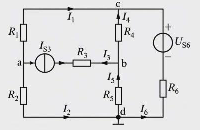
节点 d 为参考节点，节点电压为
U a U_a U b U_b U c U_c
推导。 三个独立节点的 KCL：
n a : I 1 + I 2 − I 3 = 0 , n b : I 3 + I 4 − I 5 = 0 , n c : I 1 + I 4 + I 6 = 0 . n_a:\ I_1+I_2-I_3=0,\qquad n_b:\ I_3+I_4-I_5=0,\qquad n_c:\ I_1+I_4+I_6=0 . （这里各电流方向按图中箭头，n c n_c
I 1 = G 1 ( U a − U c ) , I 2 = G 2 U a , I 3 = − I S 3 , I 4 = G 4 ( U b − U c ) , I 5 = − G 5 U b , I 6 = G 6 ( U S 6 − U c ) . I_1=G_1(U_a-U_c),\quad I_2=G_2U_a,\quad I_3=-I_{S3},\quad I_4=G_4(U_b-U_c),\quad I_5=-G_5U_b,\quad I_6=G_6(U_{S6}-U_c). I 6 I_6 R 6 R_6 U S 6 U_{S6} R 6 R_6 U c − U S 6 U_c-U_{S6}
{ ( G 1 + G 2 ) U a − G 1 U c = − I S 3 ( G 4 + G 5 ) U b − G 4 U c = I S 3 ( G 1 + G 4 + G 6 ) U c − G 1 U a − G 4 U b = U S 6 R 6 \begin{cases}(G_1+G_2)U_a-G_1U_c=-I_{S3}\\(G_4+G_5)U_b-G_4U_c=I_{S3}\\(G_1+G_4+G_6)U_c-G_1U_a-G_4U_b=\dfrac{U_{S6}}{R_6}\end{cases}
定理 9 · 节点电压方程的一般式
G k k U k + ∑ j ≠ k G k j U j = ∑ ( k ) G U S + ∑ ( k ) I S , k = 1 , … , n − 1 . G_{kk}U_k+\sum_{j\ne k}G_{kj}U_j=\sum_{(k)}GU_S+\sum_{(k)}I_S,\qquad k=1,\dots,n-1 . (1) 自电导
G k k G_{kk} k k 与电流源串联的电导除外 ，总取正。
(2) 互电导
G k j G_{kj} k k j j
(3)
∑ G U S \sum GU_S k k k k
(4)
∑ I S \sum I_S k k
为什么与电流源串联的电导要除外？电流源可以看成电阻无穷大的元件，与它串联的整条支路电导为零；那个电阻再大再小都不改变支路电流，对节点方程没有影响。上图中与
I S 3 I_{S3} R 3 R_3 G a a G_{aa} G b b G_{bb}
米尔曼公式。
只有两个节点时，只有一个独立节点电压：
U = ∑ G U S + ∑ I S ∑ G . U=\frac{\sum GU_S+\sum I_S}{\sum G}.
例题 · 节点电压法求
I 4 I_4 I 6 I_6
U S 1 = 20 V U_{S1}=20\ \text{V} U S 3 = 40 V U_{S3}=40\ \text{V} U S 6 = 10 V U_{S6}=10\ \text{V} I S 2 = 10 A I_{S2}=10\ \text{A} I S 5 = 5 A I_{S5}=5\ \text{A} R 1 = 1 Ω R_1=1\ \Omega R 3 = R 4 = 2 Ω R_3=R_4=2\ \Omega R 6 = 10 Ω R_6=10\ \Omega I 4 I_4 I 6 I_6
节点 ④ 为参考节点；电流源
I S 5 I_{S5}
这个电路也能用回路电流法，但
I S 5 I_{S5}
① : ( 1 R 4 + 1 R 1 ) U 1 − 1 R 4 U 2 − 1 R 1 U 3 = − U S 1 R 1 + I S 2 ② : ( 1 R 4 + 1 R 3 ) U 2 − 1 R 4 U 1 = − U S 3 R 3 + I S 5 ③ : ( 1 R 1 + 1 R 6 ) U 3 − 1 R 1 U 1 = U S 1 R 1 − U S 6 R 6 − I S 5 \begin{aligned}\text{①}:&\ \Big(\frac1{R_4}+\frac1{R_1}\Big)U_1-\frac1{R_4}U_2-\frac1{R_1}U_3=-\frac{U_{S1}}{R_1}+I_{S2}\\ \text{②}:&\ \Big(\frac1{R_4}+\frac1{R_3}\Big)U_2-\frac1{R_4}U_1=-\frac{U_{S3}}{R_3}+I_{S5}\\ \text{③}:&\ \Big(\frac1{R_1}+\frac1{R_6}\Big)U_3-\frac1{R_1}U_1=\frac{U_{S1}}{R_1}-\frac{U_{S6}}{R_6}-I_{S5}\end{aligned} U S 1 U_{S1} R 1 R_1 U S 3 U_{S3} U S 6 U_{S6}
U 1 = − 14 V , U 2 = − 22 V , U 3 = 0 , U_1=-14\ \text{V},\quad U_2=-22\ \text{V},\quad U_3=0, I 4 = U 1 − U 2 R 4 = 4 A , I 6 = − U S 6 − U 3 R 6 = − 1 A . I_4=\frac{U_1-U_2}{R_4}=4\ \text{A},\qquad I_6=\frac{-U_{S6}-U_3}{R_6}=-1\ \text{A}. I 6 I_6 R 6 R_6 − U S 6 -U_{S6}
14.2 纯电压源支路与受控源
纯电压源支路 ：一条支路只有电压源、没有电阻，电导为无穷大，节点方程里写不出它的电流。常用办法是把参考节点选在纯电压源支路的一端 ，另一端的节点电压就直接等于电压源电压，这个节点不必再列方程。
例题 · 参考节点选在纯电压源一端
U S 1 = U S 2 = 4 V U_{S1}=U_{S2}=4\ \text{V} U S 4 = 10 V U_{S4}=10\ \text{V} I S 3 = 1 A I_{S3}=1\ \text{A} R 1 = R 4 = R 5 = 2 Ω R_1=R_4=R_5=2\ \Omega I 4 I_4
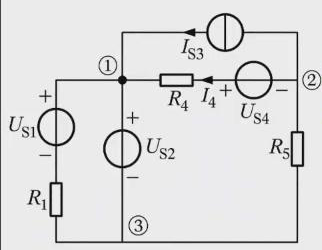
支路 2 只有电压源
U S 2 U_{S2}
支路 2 是纯电压源支路，参考节点选在 ③，立刻得到
U 1 = U S 2 = 4 V U_1=U_{S2}=4\ \text{V} I S 3 I_{S3} U S 4 U_{S4}
( 1 R 4 + 1 R 5 ) U 2 − 1 R 4 U 1 = − U S 4 R 4 − I S 3 ⇒ U 2 − 2 = − 5 − 1 , U 2 = − 4 V . \Big(\frac1{R_4}+\frac1{R_5}\Big)U_2-\frac1{R_4}U_1=-\frac{U_{S4}}{R_4}-I_{S3}\ \Longrightarrow\ U_2-2=-5-1,\quad U_2=-4\ \text{V}. 由支路 4 的电压关系：
I 4 = U 2 − U 1 + U S 4 R 4 = − 4 − 4 + 10 2 = 1 A . I_4=\frac{U_2-U_1+U_{S4}}{R_4}=\frac{-4-4+10}{2}=1\ \text{A}. U S 1 U_{S1} R 1 R_1 U S 2 U_{S2}
含受控源 ：先把受控源当独立源列方程，再用节点电压表示控制量 ，列附加方程。
例题 · 含 VCCS 的节点方程
求各节点电压和电流
I I
节点 d 为参考节点；左边是电压控制的电流源
2 U 2U U U
受控源是 VCCS
2 U 2U
a : ( 1 2 + 1 2 ) U a − 1 2 U b = − 4 2 − 4 + 2 U b : − 1 2 U a + ( 1 2 + 1 2 + 1 2 ) U b − 1 2 U c = 6 2 c : − 1 2 U b + ( 1 2 + 1 2 ) U c = 4 − 6 2 − 1 附加 : U = U a + 4 \begin{aligned}\text{a}:&\ \Big(\frac12+\frac12\Big)U_a-\frac12U_b=-\frac42-4+2U\\ \text{b}:&\ -\frac12U_a+\Big(\frac12+\frac12+\frac12\Big)U_b-\frac12U_c=\frac62\\ \text{c}:&\ -\frac12U_b+\Big(\frac12+\frac12\Big)U_c=4-\frac62-1\\ \text{附加}:&\ U=U_a+4\end{aligned} 逐项说明：节点 a 接三条有电导的支路中，4 A 电流源串 6 Ω
的那条电导不计；4 V 电压源”−“端经 2 Ω 对着 a，所以是
− 4 2 -\frac42 − 4 -4 + 2 U +2U 3 2 \frac32 U U − 4 -4 U = U a + 4 U=U_a+4
联立解得
U a = − 8 3 V , U b = 4 3 V , U c = 2 3 V , I = U a − U b 2 = − 2 A . U_a=-\frac83\ \text{V},\qquad U_b=\frac43\ \text{V},\qquad U_c=\frac23\ \text{V},\qquad I=\frac{U_a-U_b}{2}=-2\ \text{A}. 检验节点
c ：− 2 3 + 2 3 = 0 -\frac23+\frac23=0 4 − 3 − 1 = 0 4-3-1=0
14.3 改进的节点电压法
电路中有多条纯电压源支路，参考节点只能选在其中一条的一端。其他纯电压源支路的电导无穷大，还是写不出节点方程。
节点 a、b 间的支路 3 只有理想电压源
U S 3 U_{S3}
结论 8 · 改进的节点电压法
(1) 设理想电压源所在支路的电流为未知量（如
I 3 I_3
(2) 多了一个未知量，补充电压源两端电压与节点电压的约束关系。
上图以 c 为参考节点，设
U S 3 U_{S3} I 3 I_3
a : ( 1 R 1 + 1 R 2 ) U a = U S 2 R 2 + I 3 , b : ( 1 R 4 + 1 R 5 ) U b = − U S 4 R 4 − I 3 , 补充 : U a − U b = U S 3 . \text{a}:\ \Big(\frac1{R_1}+\frac1{R_2}\Big)U_a=\frac{U_{S2}}{R_2}+I_3,\qquad \text{b}:\ \Big(\frac1{R_4}+\frac1{R_5}\Big)U_b=-\frac{U_{S4}}{R_4}-I_3,\qquad \text{补充}:\ U_a-U_b=U_{S3}. 三个方程、三个未知量（U a U_a U b U_b I 3 I_3 R 5 R_5 I 5 I_5
例题 · 同时含 CCVS 和 VCCS
U S = 10 V U_S=10\ \text{V} R 1 = 1 Ω R_1=1\ \Omega g m = 1.5 S g_m=1.5\ \text{S} R 2 = 2 Ω R_2=2\ \Omega R m = 3 Ω R_m=3\ \Omega R 3 = 6 Ω R_3=6\ \Omega U S U_S
节点 ④ 为参考节点；②、③ 之间是受控电压源
R m I 1 R_mI_1 g m U g_mU
选 ④
为参考节点，U 1 = U S = 10 V U_1=U_S=10\ \text{V} I I
② : − 1 R 1 U 1 + ( 1 R 1 + 1 R 2 ) U 2 = − I ③ : 1 R 3 U 3 = I + g m U 补充 : U 2 − U 3 = R m I 1 , U = U 2 , I 1 = U 1 − U 2 R 1 \begin{aligned}\text{②}:&\ -\frac1{R_1}U_1+\Big(\frac1{R_1}+\frac1{R_2}\Big)U_2=-I\\ \text{③}:&\ \frac1{R_3}U_3=I+g_mU\\ \text{补充}:&\ U_2-U_3=R_mI_1,\qquad U=U_2,\qquad I_1=\frac{U_1-U_2}{R_1}\end{aligned} 解得
U 2 = U = 45 2 V , U 3 = 60 V , I 1 = − 25 2 A , I = − 95 4 A . U_2=U=\frac{45}{2}\ \text{V},\qquad U_3=60\ \text{V},\qquad I_1=-\frac{25}{2}\ \text{A},\qquad I=-\frac{95}{4}\ \text{A}. U S U_S I 1 + g m U I_1+g_mU
P = U S ( I 1 + g m U ) = 10 × ( − 25 2 + 135 4 ) = 212.5 W . P=U_S(I_1+g_mU)=10\times\Big(-\frac{25}{2}+\frac{135}{4}\Big)=212.5\ \text{W}.
14.4 怎样选方法
结论 9 · 方法选择的顺序
(1)
先看能不能等效化简 （串并联、平衡电桥、Y-Δ、电源变换）。
(2) 比较
n − 1 n-1 b − n + 1 b-n+1
(3)
回路法：没有电流源或电流源在外围，用网孔；电流源在中间支路，用基本回路，并把电流源选为连支。
(4)
节点法：纯电压源支路的一端选为参考节点；多条纯电压源支路用改进节点法。
(5)
含受控源，无论哪种方法：先当独立源，再用本方法的未知量（支路电流、回路电流或节点电压）表示控制量。
方法本身不难，难在拿到电路图先判断走哪条路。第一步永远是看电流源、电压源在什么位置。
15 第 4 章练习
第 4 章作业为教材习题
4.1、4.6、4.12、4.16、4.22、4.28、4.29、4.34、4.37、4.40（以教材为准）。下面
Q1–Q6 是配合本章例题的补充练习，先独立作答，再展开提示和解析。
Q1 平衡电桥与 Y-Δ 两种做法
对 12.5 的例题，不做 Y-Δ 变换，直接判断图 (a) 中有没有平衡电桥，并求
R a b R_{ab}
提示 · 看 Δ 的哪两个顶点等电位
在 (a) 中，3 Ω 右端记为 P，Δ 中间顶点记为 Q，b 端记为 B，右侧竖线记为
R。从 P 到 B 有两条路：P–Q–B（5 Ω、2.5 Ω）与 P–R–B（2 Ω、1 Ω），Q、R
之间是 1 Ω。
解析
5 × 1 = 5 5\times1=5 2.5 × 2 = 5 2.5\times2=5 2 : 1 2:1 ( 5 + 2.5 ) (5+2.5) ( 2 + 1 ) (2+1) 5 5
1 R P B = 1 7.5 + 1 3 + 1 5 = 2 3 , R P B = 1.5 Ω , R a b = 3 + 1.5 = 4.5 Ω . \frac1{R_{PB}}=\frac1{7.5}+\frac13+\frac15=\frac{2}{3},\qquad R_{PB}=1.5\ \Omega,\qquad R_{ab}=3+1.5=4.5\ \Omega . 与 Y-Δ 做法一致。
Q2 电源变换中被变换支路的电流
在 12.6 第一个例题（求
I 3 I_3 R 1 R_1 R 1 R_1
提示
先由图 (b) 求出上下两节点间的电压
U U
解析
图 (b) 中流过
R 3 R_3 U = − R 3 I 3 ′ = − 40 V U=-R_3I_3'=-40\ \text{V} U = U S 1 − R 1 I U=U_{S1}-R_1I I I R 1 R_1 I = 10 − ( − 40 ) 10 = 5 A I=\dfrac{10-(-40)}{10}=5\ \text{A}
图 (b) 中
R 1 R_1 U / R 1 = − 4 A U/R_1=-4\ \text{A} I S 1 I_{S1} I S 1 − ( − 4 ) = 5 A I_{S1}-(-4)=5\ \text{A} R 1 R_1
Q3 负电阻
在 12.6 第三个例题中，求从
U S U_S R e q R_{eq} β \beta β > 3 \beta>3 I I
解析
R e q = U S I = R 1 + R 2 − β R 1 = 30 − 10 β ( Ω ) R_{eq}=\dfrac{U_S}{I}=R_1+R_2-\beta R_1=30-10\beta\ (\Omega) β < 3 \beta<3 β = 3 \beta=3 β > 3 \beta>3 β = 4 \beta=4 R e q = − 10 Ω R_{eq}=-10\ \Omega I = − 0.3 A I=-0.3\ \text{A}
Q4 用节点法重做网孔例题
13.2
的网孔例题（U S 1 = 100 V U_{S1}=100\ \text{V} U S 2 = 140 V U_{S2}=140\ \text{V} I 4 I_4
提示
左侧竖线上端与上方两条横线的左端是同一节点
L；右侧竖线是导线，把右上、右下连成同一节点
R；左下角是第三个节点。取左下角为参考节点。
解析
只有 3 个节点，独立节点 2 个，比 3 个网孔少。取左下角 B 为参考，设
U L U_L U R U_R
L : ( 1 15 + 1 4 + 1 10 ) U L − ( 1 15 + 1 4 ) U R = 100 15 , \text{L}:\ \Big(\frac1{15}+\frac14+\frac1{10}\Big)U_L-\Big(\frac1{15}+\frac14\Big)U_R=\frac{100}{15}, R : − ( 1 15 + 1 4 ) U L + ( 1 15 + 1 4 + 1 50 + 1 5 ) U R = − 100 15 − 140 5 . \text{R}:\ -\Big(\frac1{15}+\frac14\Big)U_L+\Big(\frac1{15}+\frac14+\frac1{50}+\frac15\Big)U_R=-\frac{100}{15}-\frac{140}{5}. （U S 1 U_{S1} R 1 R_1 U S 2 U_{S2} U L = − 60 V U_L=-60\ \text{V} U R = − 100 V U_R=-100\ \text{V} I 4 = U L − U R 4 = 10 A I_4=\dfrac{U_L-U_R}{4}=10\ \text{A}
Q5 选择方法
对 14.1
的节点例题，如果用回路电流法，应该用网孔还是基本回路？需要列几个 KVL
方程？
解析
b = 6 b=6 I S 2 I_{S2} R 1 U S 1 R_1U_{S1} R 4 R_4 I S 5 I_{S5} R 3 U S 3 R_3U_{S3} R 6 U S 6 R_6U_{S6} n = 4 n=4 b − n + 1 = 3 b-n+1=3 n − 1 = 3 n-1=3 I S 5 I_{S5} I S 2 I_{S2} I S 5 I_{S5} n − 1 n-1 b − n + 1 b-n+1
Q6 射极输出器的数值
在例题 4.1.7 中取
β = 50 \beta=50 r b e = 1 k Ω r_{be}=1\ \text{k}\Omega R b = 100 k Ω R_b=100\ \text{k}\Omega R S = 1 k Ω R_S=1\ \text{k}\Omega R e = R L = 2 k Ω R_e=R_L=2\ \text{k}\Omega A u A_u r i r_i r o r_o
解析
R e / / R L = 1 k Ω R_e/\!/R_L=1\ \text{k}\Omega ( 1 + β ) ( R e / / R L ) = 51 k Ω (1+\beta)(R_e/\!/R_L)=51\ \text{k}\Omega
A u = 51 1 + 51 ≈ 0.981 , r i = 100 / / 52 = 100 × 52 152 ≈ 34.2 k Ω . A_u=\frac{51}{1+51}\approx0.981,\qquad r_i=100/\!/52=\frac{100\times52}{152}\approx34.2\ \text{k}\Omega . R b / / R S = 100 101 ≈ 0.990 k Ω R_b/\!/R_S=\frac{100}{101}\approx0.990\ \text{k}\Omega r b e + R b / / R S 1 + β = 1.990 51 ≈ 0.0390 k Ω = 39.0 Ω \dfrac{r_{be}+R_b/\!/R_S}{1+\beta}=\dfrac{1.990}{51}\approx0.0390\ \text{k}\Omega=39.0\ \Omega
r o = 2000 / / 39.0 ≈ 38.3 Ω . r_o=2000/\!/39.0\approx38.3\ \Omega . 输入电阻几十千欧、输出电阻几十欧，正是射极输出器”输入电阻大、输出电阻小”的特点。
配图选自应迪清老师课件与《电路分析与电子技术基础 1 电路原理》（浙江大学电路课程组编）第 2、4 章。讲义按课堂内容重组，补充了推导、纠错与完整练习。制作要求与经验